TEZ: 1
CHP, İNÖNÜ CAMİLERİ KAPATTI, SATTI, AHIR, YATAKHANE, DEPO, PARTİ MERKEZİ, MÜZE YAPTI!
“Biz bunların tarihini, cemaziyülevvellerini iyi biliriz. Bunların Ana dolu topraklarında camileri nasıl ahır haline getirdiklerini iyi biliriz...”
R. Tayyip Erdoğan, 2011
“Biz, CHP döneminde camilerin satıldığını, ahıra çevrildiğini söylediğimizde Kılıçdaroğlu bizi şiddetle reddetti. Ben bu zatın kıla vuzunun kim olduğunu bilmiyorum. Bununla kalmadı değerli bir bili madamı olan Diyanet İşleri Başkanımıza son derece münasebetsiz bir üslupla dil uzattı. (...) 12 Ekim 1966’da bakın çok enteresan, bugün Kemal Kılıçdaroğlu gibi İnönü aynen şunları söylüyor: ‘Acaba Cumhu riyetin hangi devrinde camiler kapalı ve ibadet yasak olmuştur. Hiçbir zaman olmamıştır,’ diyor. Bugün Kılıçdaroğlu ne diyorsa o gün İsmet İnönü onu söylüyor. Dün dündür, bugün bugündür derse bilemem. 19 Ekim 1966’da Yeni İstiklal Gazetesi, İnönü’nün yalanlarına karşı vatandaşı ispata çağırıyor. Bir Müslüman değil, bir Hıristiyan Ermeni vatandaş aynen şu mektubu yazıyor: (...)Kahramanmaraş’tan Mehmet Karaca şunları yazıyor. (...) Balıkesir’den mektup (...)
Belge 1: Camilerin satışını gösteren yasa. Sayın Kılıçdaroğlu, belge konuşuyor bak.
Tasnif harici camii ve mescitler kendilerinden başkaca istifade edilmek üzere kapatılır. Bu yasanın çıkmasının ardından Türkiye’nin her vilayetinde camiler kapatılmaya başlandı.
Belge 2: İşte cetvel. 19261950 arasında 513 camii satılıyor. 327 cami arsası ki, bunların çoğunun üzerinde camii var, bunlar da satılı yor. 1070 mescit satılıyor bu arada. Bunlarla birlikte kilise, mezarlık gibi çok sayıda tarihi eserin satışı yapılıyor. Bunların tamamının belge leri de elimizde. Bert Say m Kılıçdaroğlu’na sadece birkaçını gösteriyo rum. Buyurun bakanlar kurulu kararı.
Belge 3: Kılavuzu değiştir ktlavuzu. Ben CHP’ye gönül veren kar deşlerimize de sesleniyorum. İnanıyorum ki sizin mayanız sağlam, ama genel başkanınız sıkıntılı. Satılan camiler, müze olarak, toprak mah sulleri ofisi, hububat deposu olarak kullanılıyor. Eğlence merkezine dönüştürülen cami bulunuyor. Camilerin satışı denilirken, harap ve vakıf bina deniliyor.
Belge 4: Vakıflar Umum Müdürlüğünden Tekirdağ Valiliğine, satılmasına bakanlar kurulunca karar verilip tebliğ edilmiş olan cami lerin satış ilanlarının mevki olarak adı tahsis edilmek suretiyle, harap bina şeklinde neşrettirilmesi rica olunur. Bunlar millet uyanmasın diye yapılıyor.
Belge 5: Vakıflar Genel Müdürlüğü önemli ve acele notuyla bir belge gönderiyor. Üsküdar’da, Atik Valide Camii ve müştemilatından Efk.au Tekkesi, vakıflar müdürlüğüne haber verilmeksizin işgal edilmiş ve yalnız Efkan Tekkesi’nin havuzlu odalarının işgaline devam edil mekte bulunmuştur. Emsalsiz, ince ve kıymetli yadigârlardır.
Belge 6: Bir vatandaş Vakıflar Genel Müdürlüğü’ne dilekçe yazı yor, genel müdürlük bunu başbakanlığa gönderiyor.
Behçet Öner tarafından gönderilen telyazıda kazada mevcut ca milerin tamamen işgal edildiğinden bahisle, Ramazan’da cemaatle namaz kılmak üzere, Ulu Camii’nin tahliyesi istirham edilmektedir. Karacabey’de namaz kılacak yer kalmıyor.
Belge 7: Gaziantep’teki Selim Efendi Camii. Ne olmuş biliyor mu sunuz? Cumhuriyet Halk Partisi’ne satılmış. Çok manidar. Cumhuri yet Halk Partisi burasını teşkilat binası olarak kullanıyor.
Belge 8: Edremit’teki Yıldırım Camii. O da Halkevi yapılmak üze re CHP’ye satılıyor. 300 lira bedelle satılıyor.
Kılıçdaroğlu’nun bunlardan haberi yoktur.
Belge 9: Osmangazi ilçesi Tophane Mahallesi’ndeki camii Bando Müdürlüğüne teslim ediliyor.
20 Nisan 1936 Cumhuriyet Gazetesi: ‘Bu ne insafsızlık. Sefer hisar’da tarihi bir camii ahır yapılmış. ’ Bu dosya içinde Tek Parti döne limde camilerin satışına, depo olarak kullanılmasına, ahır yapılmasına dair, onlarca yüzlerce haber kupürü bulunuyor. (...)
Sayın Kılıçdaroğlu sen tarihinle gurur duymayı bırak da, oku.(...) İstediğin kadar pişkinliğe vur, senin tarihin bu millette hiç silinmeye216
cek yanıklı iz bırakmıştır. Değişmeyen değişemeyen CHP’ye kendi ta rihini yine biz öğreteceğiz...”
R. Tayyip Erdoğan, 24 Nisan 2012
“1940’lt yıllar boyunca Türkiye’de millete, milletin değerlerine, milletin kutsallarına karşı aleni bir savaş yürütüldü. Bu ülkede camile rin kapılarına kilit vuruldu. Camiler ahıra, depoya, müzeye çevrildi...”
R. Tayyip Erdoğan, 30 Eylül 2012
"... Zaten tarihinde var. Bunlar Tek Partili dönemde camile ri ahır olarak kullananlar değil mi? Bunları Meclis’te hep belgelerle açıkladım...”
R. Tayyip Erdoğan, 16 Haziran 2013
CEVAP: 1
Tarihi Camiler Ahır Yapılmış!
Başbakan Erdoğan, 24 Nisan 2012’de, “20 Nisan 1936 tarihli Cumhuriyet Gazetesi: ‘Bu ne insafsızlık. Seferhisar’da tarihi bir camii ahır yapılmış.’ Bu dosya içinde Tek Parti döneminde camilerin satışı na, depo olarak kullanılmasına, ahır yapılmasına dair, onlarca yüzler ce haber kupürü bulunuyor (...),” demiştir.
Yani Başbakan Erdoğan’a göre CHP, İzmir Seferihisar’daki tarihi bir camiyi ahır yapmıştır! Erdoğan, belge olarak da 20 Nisan 1936 tarihli Cumhuriyet gazetesindeki “Bu ne insafsızlık, Seferihisar’da tarihi cami ahır yapılmış!” başlıklı haberin kupürünü göstermiştir.
0 cami Seferihisar’ın Hereke (Düzce) köyündeki tarihi Kasım Çelebi Camii’dir. Düzce, Osmanlı döneminde nüfusunun yüzde 60’ı, 70’i Rumlardan oluşan bir köydür. İşgal sırasında köyde neredeyse hiç Türk kalmamıştır. Kurtuluş Savaşı sırasındaki Yunan işgali sırasında köy yakılıp yıkılmıştır. Müslüman halk köyden göç emek zorunda kal mıştır. 1922’de İzmir’in kurtuluşundan sonra Müslüman halk yeniden köye yerleşmiştir.
Yunan işgal orduları Anadolu’daki birçok cami gibi Hereke kö yündeki o camiyi de tahrip ederek ahır haline getirmiştir.
Başbakan’ın “İşte belge” diye Meclis kürsüsünden sallandırdı ğı 20 Nisan 1936 tarihli, Cumhuriyet gazetesinin “Bu ne insafsızlık, Seferihisar'da tarihi cami ahır yapılmış” başlıklı kupüründe işte o Yu nan “insafsızlığından” söz edilmektedir.
Haberin tamamı şöyledir:
'‘Seferihisar’ın Hereke Köyii’nde bir cami tahrip edilmiş ve ahır ha line getirilmiştir. Müze müdürü tahkikat yapmıştır. Verdiği malumata göre, kütüphane ve medresesi vardır. Kütüphanesinde eser kalmamıştır. Evren oğullarından Kasım tarafından inşa ettirilmiştir. Üstündeki Arap ça yazıya göre 641 yıllık olduğu anlaşılmıştır. OsmanlıTürk stilindedir. Tahribata rağmen, geriye kalan kısmı muhafaza edilirse, kıymettir. ”
Yani? Camiyi ahır haline getiren CHP değil, işgal sırasındaki Yu nan Vandallığıdır. Caminin insafsızca ahır haline getirildiğini tespit edip ve bu bilgiyi Cumhuriyet gazetesine veren de bizzat, CHP’nin İzmir Müze Müdürü’dür. Müdür, arkeolojik sayım yaparken bu gerçeğin farkına varmıştır. Çok daha ilginci, Başbakan Erdoğan’ın 1936’da CHP tarafından ahır haline getirildiğini iddia ettiği o camiyi, 1936’da, bizzat CHP yeniden cami haline getirmiştir.
Yüzlerce yıllık Kasım Çelebi Camii metruk halde bulunduktan sonra, 1936 yılında dönemin Tek Parti hükümetince revakları temiz lenmiş, minaresi onarılmış ve temizlenerek ibadete açılmıştır.
Dahası İzmir Seferihisar’daki o tarihi caminin tarihi medresesini yeniden açan da CHP’dir. CHP’li Belediye Başkanı Tunç Soyer, CHP tarafından ibadete açılmasına rağmen, CHP tarafından ahır yaptırıldı, denilen Kasım Çelebi Camii’nin medresesini de restore ettirmiştir.
Dolayısıyla Yılmaz Özdil’in dediği gibi, “Söz konusu kupürün sa dece ‘bu ne insafsızlık’ tarafı doğrudur. Mustafa Kemal Atatürk’ü ca miyi ahır yaptıran kişi olarak göstermek... Hakikaten insafsızlıktır.”
İleride bolca örneğini göreceğimiz gibi Başbakan R. Tayyip Erdo ğan, erken Cumhuriyet dönemiyle hesaplaşırken bu “belgelere takla attırma” yöntemini sıkça kullanmaktadır! Başbakan muhtemelen danışmanlarınca eline tutuşturulan gazetelerle, kitaplarla, belgelerle kürsüye gelip, çok rahat bir yüz ifadesiyle “CHP, İnönü şunu yaptı, bunu yaptı! El insaf!" dedikten sonra, “İşte belgesi!” diyerek kürsü den elindeki gazete, kitap veya belgeyi göstermektedir. Ancak bazen kapakta, kupürde veya başlıkta yazanla belgenin içeriği birbirinden çok farklı olabilmektedir, öyle ki Erdoğan’ın bazı belgelerinin içeriği Erdoğan’ın tezlerini çürütmektedir. Sanırım Erdoğan, hem halkımızın, başbakanın kendinden emin şekilde Meclis kürsüsünden söyledikleri ne sorgulamadan hemen inanacağı düşüncesiyle, hem de medyamızın “başbakan korkusuyla” söylediklerini sorgulayamayacağı inancıy la eline tutuşturulan belgeleri pek de fazla incelemeden kamuoyuyla paylaşmaktadır. Ancak bu şekilde tarihi gerçekleri de çarpıtmaktadır. Bunu bilerek yapıyorsa durum daha da vahimdir.
Yukarıda görüldüğü gibi Başbakan Erdoğan, 24 Nisan 2012’de Meclis kürsüsünden “belge” diye elindeki 1936 tarihli Cumhuriyet gazetesi kupürünü gösterip heyecanlı bir ses tonuyla ve alaycı mi miklerle kupürdeki, “Bu ne insafsızlık, Seferihisar’da tarihi cami ahır yapılmış!” başlığını okuduktan sonra CHP’yi, İnönü’yü suçlamıştır. Ancak haberin içeriğindeo camiyi ahır yapanın CHP değil, Yunan işgal orduları olduğu anlatılmıştır. Ayrıca Yunanın ahır yaptığı o ca miyi CHP yeniden cami yapmıştır. Fakat Erdoğan bu gerçekleri dile getirmemiştir.
Benzer şekilde, “CHP’nin Konya Alaaddin Camii’ni ahır yaptı ğını” söyleyen Başbakan Erdoğan, yine tarihi gerçekleri çarpıtmıştır. CHP lideri Kemal Kılıçdaroğlu, Başbakan Erdoğan’ın bu iddiasına şöyle cevap vermiştir: “Başbakan, Konya’da Aladdin Camii’ne yollama ya pıp, ‘CHP buraları ahır yaptı,’ demişti (elindeki İslam Ansiklopedisini göstererek). 325. sayfada bu camiyi anlatırken, ‘191418, 192023, 194045 savaş yıllarında askeri işlere tahsis edilerek kapatılmıştır,’ di yor. Sultan Vahdettin, askerlere tahsis ediyor, savaş yılları, sonra Kur tuluş Savaşı’nda askerlere tahsis ediliyor. 194045’te Hitler’in milyon larca insanı katlettiği günler. Mareşal Fevzi Çakmak askerlere tahsisine izin veriyor. O askerlerin çoğu bugün şehit olarak topraklarımızda ya tıyor. Osmanlı da tahsis etmiş. Cumhuriyet de. ‘Ahır yaptılar,’ diye yalan söyleyeceksin. Diyanet İşleri Başkanı’nı da göreve çağırıyorum. Hiçbir zaman, hiçbir dönemde hiçbir cami ahır yapılmamıştır. Başba kan söyledi diye sesinizi kesmeyeceksiniz. Sizin ansiklopediniz söylü yor, niye sesinizi çıkarmıyorsunuz?”
Sanata, kültüre, arkeolojiye ve tarihe çok önem veren Atatürk’ün sağlığında. Atatürk'ün bilgisi dahilinde tarihi camilerin ahır yapılması mümkün olabilir mi Allah aşkına?
El insaf yani!
CHP Cami Düşmanıdır Tezinin Kaynağı: M. Şevket Eygi R. Tayyip Erdoğan'ın “CHP camileri kapattı, sattı, ahır, yatakhane, tuvalet yaptı!" tezinin temel kaynağı İslamcı yazar M. Şevket Eygi’dir.
Prof. Ali Fuat Başgil, yabancı bir ülkede yayımladığı 27 Mayıs İhtilali ve Sebepleri adlı kitabında, Cumhuriyet devrinde Türkiye’de Müslümanların camilere korkarak ve ancak iki taraflarına bakınıp, kimseler görmeden gitmeye çalıştıklarını yazmıştır.
Bu ve benzeri iddialara İsmet İnönü 1966 yılında, “Benim döne mimde camiler kapatılmamıştır...” diye yanıt vermiştir. İnönü’nün bu açıklaması üzerine, CHP’yi ve İnönü’yü “din düşmanı” gösterip halkın gözünden düşürmek isteyen çevreler hemen harekete geçerek CHP’ye ve İnönü’ye saldırmaya başlamıştır.
Şeriatçılığıyla ve kışkırtıcılığıyla ünlü dinci yazar Mehmet Şevket Eygi, 1966 yılında Yeni İstiklal gazetesinde vatandaşlara bir çağrıda bulunarak, “CHP döneminde yıkılan, satılan, kiraya verilen, depo ve müze yapılan camiler hakkında resim, yazı ve bilgi,” göndermelerini istemiştir. Gelen yazı ve resimlerin bir kısmı Yeni İstiklal gazetesinde yayımlanmıştır. Bu resimleri kimlerin nasıl çekip gönderdiği ise sır ola rak kalmıştır.
Mehmet Şevket Eygi, bu konuyu 2003 yılında Yakın Tarihimizde Cami Kıyımı adıyla kitaplaştırmıştır. Kitabın başlığının altında “Ka patılan, satılan, yıkılan, kiraya verilen, depo yapılan, CHP ocağı, saz ve içki evi, spor kulübü lokali haline getirilen, müzeye dönüştürülen binlerce mabedin hazin hikâyesi” şeklinde bir ibare vardır'.
Başbakan Erdoğan, CHP’yi ve İnönü’yü “cami düşmanlığıyla” suçlarken M. Şevket Eygi’nin bu yayınlarından yararlanmıştır. Nite kim Erdoğan, 24 Nisan 2012 tarihli konuşmasında, laf arasında “19 Ekim 1966’da Yeni İstiklal gazetesi, İnönü’nün yalanlarına karşı va tandaşı ispata çağırıyor,” diyerek kaynağını ağzından kaçırmıştır.
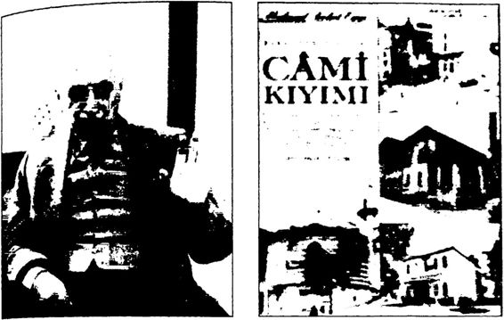 M. Şevket Eygi ve “Cami Kıyımı” adlı kitabı Peki, ama CHP’yi ve İnönü’yü “cami düşmanlığıyla” suçlayan bu Mehmet Şevket Eygi kimdir?
M. Şevket Eygi, 16 Şubat 1969’da İstanbul’a gelen ABD’nin 6. Filosunu karaya çıkarmayıp Türkiye’den kovmayı düşünen antiemper yalist üniversite gençliğine karşı, sahibi olduğu Bugün gazetesinde kış kırtıcı yazılar kaleme almış, bu yazılardan etkilenen Müslüman genç ler ABD’nin 6. Filosuna karşı gösteriler yapan antiemperyalist Türk gençlerine satırlarla, sopalarla saldırarak iki kişinin ölümüyle yüzlerce kişinin yaralanmasıyla sonuçlanan Kanlı Pazar olaylarına neden ol muştur. Eygi, Bugün gazetesinde “Tarihimizin en kara giinü: Beyazıt Kulesi’ne kızıl bayrak çekildi”, "Kızılcıklar dün de tehdit ve tecavü ze devam etti”, “Namaza Davet”, “Kızılları boğmanın vakti geldi”, Kızıl emperyalizmin para ile tutulmuş uşaklarını en ufak kıpırdanışta gebertmek için ant içildi”, “Cihada hazır olunuz” gibi manşetlerle Müslüman gençleri ABD 6. Filosuna destek olmaya, bu filoya karşı eylem yapan antiemperyalist gençlere saldırmaya çağırmıştır.' İşin özü şu ki CHP’yi ve İnönü’yü “cami düşmanı” olmakla suçlayan Eygi.
gerçek anlamda bir “cami istismarcısıdır”. Örneğin “Namaza Davet” adlı yazısında şöyle demiştir:
“Bir müddetten beri kılmaya başladığımız CEMAATİ KÜBRA İLE SABAH NAMAZLARININ faydasını hepimiz gördük. Önümüz de 16 Şubat Pazar günü büyük bir cemaat halinde sabah namazı kıl mak üzere bütün mümin kardeşlerimi Beyazıt Camii şerifinde toplan maya davet ediyorum. Aziz kardeşlerim koşunuz! Cemaate koşunuz! 16 Şubat Pazar günü, gün doğmadan Beyazıt Camii’nde toplanınız! Kafirler bizim cemaatimizi görünce hapı yutar zaten. ”
M. Şahap Tan, 1970 yılında yayımlanan Bugünün Dervişi Meh met Şevket Eygi Kimdir? Belgelerle adlı kitabında Eygi’nin 1969 Kanlı Pazar olaylarını tezgâhlamak için Arabistan’dan 350.000 dolar aldığını yazmıştır. Kitaba göre Eygi’nin Almanya’daki hesabına Arabistan’dan 350.000 dolar gönderilmiştir. Kitapta ayrıca Eygi’nin İsrail’e ve Si yonizme hizmet ettiği de belgelerle gözler önüne serilmiştir.
Türkiye’de 1960’larda bir taraftan Kanlı Pazar olayını tertipleyen M. Şevket Eygi diğer taraftan da türbanı yaygınlaştırmak için uğraş mıştır. M. Şevket Eygi’nin Bugün gazetesinde köşe yazarlığı yapan Şule Yüksel Şenler, o yıllarda, M. Şevket Eygi ile İstanbul’dan yola çıkıp Anadolu’yu il il dolaşarak kadınları, başlarına türban bağlamazlarla cehennemde yanacakları şeklinde korkutmuştur. Şule Yüksel Şenler, ilk basımı 1967’de, ikinci basımı 1968’de M. Şevket Eygi’nin çıkardığı Bugün gazetesince yapılan Hidayet adlı kitabında Müslüman kadınla rın sadece gözleri açıkta kalacak şekilde örtünmesinin dinin emri oldu ğunu yazmıştır.
Yani, “CHP döneminde camiler kapatıldı, depo ve hatta tuvalet yapıldı!” iddiasını ileri süren R. Tayyip Erdoğan’ın en temel kayna ğı, şeriatçılığı, din istismarcılığı ve kışkırtıcılığı tescilli bir “Atatürk ve cumhuriyet düşmanı” olan bu Mehmet Şevki Eygi’nin yazdıkları ve söyledikleridir. Erdoğan, 24 Nisan 2012 tarihli konuşmasında bu ger çeği bizzat itiraf etmiştir.
Öncelikle, İslam dinine göre “İnsana şah damarından bile ya kın olan ALLAH her yerdedir.” Dolayısıyla ibadet etmek için ille de sınırları belirlenmiş ve dört duvarla çevrilmiş bir mekâna ihtiyaç yoktur. İslam’a göre, “darül harp” olmayan ve “temiz” olan her yer toplanıp ibadet edilen, cem olunan yerdir, yani camidir. Bu mantık gereği olsa gerek, Hz. Muhammed, İslamiyeti yaymaya başladığı ilk dönemlerde “görkemli olmayan” ibadethaneler diye tanımlanabilecek “mescitler” inşa ettirmiştir. Hatta bunların inşaatında bizzat çalışmış tır. Hz. Muhammed, fitneye bozgunculuğa alet edilen bir mescidi ise bizzat yıktırmıştır. Bu mescit, münafıkların, fitne ve fesat yuvası ve silah deposu olarak kullandıkları ve Kubâ denilen yerde yaptırdık ları Dırar Mescidi’dir. Hz. Muhammed, Tebük Seferi’nden dönüp Medine’ye gelirken, ZiEvân denilen yerde konaklamıştır. Bu sırada Dırar Mescidi’ni kuran münafıklar, gelip peygamberi Dırar Mescidi’ne götürmek istemiştir. Bunun üzerine Tevbe Suresi 107110. ayetler ine rek oraya gitmemesi bildirilmiştir.
İslam’da “cami fetişizmi” Emeviler döneminde başlamıştır. Dini siyasete alet eden Emeviler, ibadetleri “şov aracı” haline getirirken, büyük boyutlu ve çok sayıda cami yapmıştır.
Bugün Türkiye’de birbirine sadece birkaç metre uzaklıkta birkaç cami görmek mümkündür. Bunun adı “dindarlık” değil, “israf” ve “gösteriş”tir; israf ve gösteriş de İslam dinine göre haramdır, günahtır.
Prof. Yaşar Nuri Öztürk’ün dediği gibi: “Soğuk savaş dönemin deki Yeşil Kuşak İslâmî ve günümüzdeki İlımlı İslam bu ibadet Müslü manlığının markalarıdır. Bu markaların amacı kısa ve nettir. Bol bol cami yaparak oralarda bloke olup cennet kazanmaya bakın; burnu nuzu başka işlere sokmayın.” Bu mantıkla hareket edildiğinde Mumem. 19 Ekim 1966'da Yeni İstiklal gazetesi, İnönü’nün yalanlarına karşı vatan daşı ispata çağırıyor. Bir Müslüman değil, bir Hıristiyan Ermeni vatandaş aynen şu mektubu yazıyor (...) Kahramanmaraş'tan Mehmet Karaca şunları yazıyor. (...) Balıkesir’den mektup (...)”h simmed İkbal'in dediği gibi camiler, sömürgecilerin hapishanelerine, kutsallaştırılmış hapishanelere dönerler. Öyle hapishaneler ki kapısına kilit vurmanıza da gerek yok. İçeri soktuklarınız zaten orada kendile rini bağlarlar.
Cumhuriyet’in Cami Politikası: İhtiyaç Kadar Cami Türkiye’de özellikle 16. yüzyılda halifeliğin Osmanlı’ya geçmesin den sonra ArapEmevi İslam anlayışı hâkim olmaya başlamış, bu an layış doğrultusunda camiler din istismarının en önemli sembolü haline getirilmiştir. Padişahlar, sultanlar, şehzadeler ihtiyaç var yok bakma dan görkemli camiler yaptırıp Müslüman halkın takdirini kazanmak istemişlerdir. Örneğin 19. yüzyılın sonu, 20. yüzyılın başında okulu, hastanesi olmayan çok sayıda Anadolu kenti varken, camisi olmayan Anadolu kenti yok gibidir. İhtiyaç olmadığı halde Allah ile aldatmak için sürekli cami yapmak yerine, bir taraftan ihtiyaç fazlası camileri belirleyip dönüştürerek başka amaçlar için kullanmak, diğer taraftan ihtiyaç duyulan okul ve hastane gibi burumların yapımına ağırlık ver mek aslına bakılacak olursa daha İslami bir davranıştır.
Nitekim Osmanh’nın son zamanlarında 1910 yılında “camilerin tasnifine” karar verilmiş, cami envanteri düzenlenerek ihtiyaç fazlası camilerin belirlenmesi gündeme gelmiştir.
1927 yılında tüm Türkiye’de, okulların iki katı; “14.425 okula karşılık, 28.705 cami” vardır.
Bu nedenle, 17 Nisan 1927 tarihli 1011 sayılı Bütçe Kanunu’nun 14. maddesine göre, Türkiye’ye gerçekten “ne kadar cami” ve “ne ka dar din görevlisi” gerektiğinin 31 Mayıs 1928 tarihine kadar belir lenmesi istenmiştir. Görüşmeler sırasında Konya Milletvekili Musa Kâzım Bey, “Hakiki ihtiyaç muğlak bir kelime, ne demek, şu kadar cami fazla ise gerisini yıkıp satacak mıyız?” diye sorduğunda bunu hazırlayanlardan encümen üyesi Gaziantep Milletvekili Ahmet Remiz Bey, “2911 tarihli kanunda da böyle idi. Ulemanın bile onayı alınmış tı, ” demiştir.
Diyanet İşleri Reisliği 8 Kânunusani 1928’de ikinci bir tasnif ta limatnamesi yayımlamıştır. Bu talimatnamenin 3/C maddesine göre “500 m yakında olan 2. caminin tasnif dışı bırakılması ” hükmü geti rilmiştir. Bu konudaki nizamname, 5 Ocak 1928’de kabul edilmiştir.
Daha sonra bu nizamname biraz daha genişletilerek 25 Aralık 1932 tarihinde “Cami ve Mescitlerin Sınıflandırılması Hakkındaki Ni zamname” adıyla yürürlüğe girmiştir (20 madde). Bu çerçevede Tür kiye genelinde “ihtiyaç fazlası” olduğuna karar verilen camiler belir lenmiştir.
İhtiyaç fazlası camilerin belirlendiği 1928’de, Türkiye’nin 14 mil yon nüfuslu bir ülke olduğu dikkate alınacak olursa, 28.705 caminin ihtiyaca göre gerçekten de fazla olduğu kolayca anlaşılacaktır. Son dönemlerde girilen savaşlardaki aşırı can kaybından sonra Türkiye’de “ihtiyaç fazlası” camilerin olması çok doğaldır. Yeni kurulan Cumhu riyet, her şeyi planladığı gibi Türkiye’nin ihtiyacına göre “cami plan laması” da yapmış ve “ihtiyaç fazlası” camileri belirleyerek “tasnif” etmiştir. Üstelik bu iş için neredeyse bir yıllık bir zaman ayrılmış, gayet titiz bir çalışma sonunda ihtiyaç fazlası camileri belirlemiştir. Yanmış yakılmış, asırlarca ihmal edilmiş bir enkazın yokluk ve yoksulluk için de kıvranan savaş yorgunu bireyleriyle Türkiye Cumhuriyeti’ni ku ranlar; aşırıya, lükse, gösterişe değil, Türkiye’nin gerçek ihtiyaçlarına önem vermiştir. Bu çerçevede “ihtiyaç fazlası camiler” belirlendikten sonra ya “satılmış” ya da “başka amaçlar için” kullanılmıştır.
En basit bir inşaatın bile belirli bir maddi kaynak gerektirdiği dü şünülecek olursa, adeta sıfırdan imar edilen yeni Türkiye için, cemaati olmayan, bu nedenle tasnif dışı bırakılan camileri “boş” veya “atıl du rumda *’ bekletme lüksü de yoktur; bu nedenle tekrar ediyorumtas nif dışı camiler dönüştürülerek farklı amaçlar için kullanılmıştır ama asla camiler, ahır, eğlence merkezi veya tuvalet yapılmamıştır. Bu ko nudaki bazı örnekler, dünyanın her yerinde olabilecek münferit kötü örneklerdir. Bu kötü örneklerden dolayı dönemin yöneticilerini suçla mak son derece gayri ciddi ve insafsız bir yaklaşımdır. Tek Parti döne minin cami politikasının eleştirilebilecek tek yanı özellikle İstanbul’da bazı tarihi camilerin de tasnife tabi tutulmasıdır. Ancak asıl tarihi cami kıyımı DP ve Menderes döneminde yapılmıştır (bu konuya ileride değinilecektir).
Dr. Nazif Öztürk, Evkaf Umum Müdürü’nün Başvekâlet’e yaz dığı 28 Ocak 1937 tarih ve 201537/10 sayılı yazıya dayanarak, ülke genelinde mevcut camilerin yüzde 50’sinin tasnife tabi tutulduğunu be lirtmiştir. Hayrat Kütük Defteri incelendiğinde 1926 ile 1972 arasında 494 cami arsası, 722 mescit arsası, 598 cami ve 995 mescidin satıldığı görülmektedir. Hayrat satışının en az olduğu şehir 1 mescit ile Yoz gat, en fazla olduğu şehir ise 386 eserle İstanbul’dur. Bu satışların tamamının CHP’nin iktidar olduğu 19261950 arasında yapılmadığı, satışların önemli bir bölümünün 1950’de iktidara gelen DP döneminde gerçekleştirildiği gözden kaçırılmamalıdır.
Yokluk ve yoksulluk içinde yeni bir devlet kurup o devleti ya şatmaya çalışanlar, pekâlâ bugünkü siyasilerin yaptığı gibi, halka hoş görünmek için “cami fetişizmi” yapabilirler; ihtiyaç fazlası camileri elden çıkarmak şöyle dursun, her kente, her köye ve hatta her mahal leye yeni camiler yapabilirler, devletin zaten kısıtlı olan kaynaklarını bu “gösteriş amaçlı camilere” akıtabilirler ve bolca da alkışlanırlardı, ama onlar, gerekirse “cami düşmanı” damgasını yemek pahasına, İs met İnönü’nün dediği gibi, “Milletin hoşuna gideni değil, milletin işine gideni yapmayı, ” tercih etmişlerdir.
Emevilerden beri devam eden “cami fetişizminin” etkisiyle olsa gerek, genç Cumhuriyet’in ihtiyaç fazlası camileri başka amaçlarla kullanma kararı, çok geçmeden “CHP camileri kapattı, depo yap tı, ahır yaptı!” biçiminde bir “iğrenç” propagandaya dönüşmüştür.
Cınnhuriyet’i kuran iradeyi “din düşmanı” göstermeye yönelik bu maksatlı propaganda, zaman içinde çok kişiyi etkilemiştir.
14.425 okula karşılık, 28.705 caminin olduğu bir ülkede, gerçek ten dindar, gerçekten vatansever insanların, ihtiyaç fazlası camilerle değil, camilerin yarısından bile az sayıdaki okullarla ilgilenmesi gere kirken; Halkevlerinin, Köy Enstitülerinin kapatılmasına tepki göster meleri gerekirken, bazıları sabah akşam neden cami muhabbeti yapı yor acaba? Müslümana Müslüman propagandası yapmalarının başka bir amacı mı var acaba?
30 Kasım 1929’da bu cami tasnifleri konusunda Atatürk’e bir soru soran gazeteci Emil Ludvvig’e Atatürk şöyle cevap vermiştir:
“... Camilerin kapanmasına hiçbir kimse taraftar olmamasına rağmen bunların bu suretle boş kalmasına taaccüp ediyor musunuz (şaşırıyor musunuz)...”
İsmet İnönü Bazı Camileri Depo Yaptı, Kapısına Kilit Vurdu R. Tayyip Erdoğan, CHP’yi tarihiyle vurmak istediğinde sözü dön dürüp dolaştırıp İsmet İnönü’ye getirmiş ve “İsmet İnönü’nün camilere kilit vurduğunu, etrafına asker diktiğini, camileri ibadete kapattığını, depoya çevirdiğini,” iddia etmiştir. Örneğin 30 Eylül 2012 tarihli ko nuşmasında, “Bu ülkede camilerin kapılarına kilit vuruldu, ” demiştir.
Evet! Gerçekten de CHP ve İsmet İnönü, 19391946 arasında Tür kiye’deki bazı camileri “depo” yapmış, bu camilerin kapısına “kilit” vurmuş, etrafına “asker” dikmiş ve bu camileri ibadete kapatmıştır!
Peki, ama İnönü bütün bunları “cami düşmanlığından” mı yap mıştır?
İnönü’nün bu davranışının nedeni cami düşmanlığı, din karşıtlığı değil, tam tersine dinine olan bağlılığı, tarihine olan saygısıdır.
“Nasıl yani?” dediğinizi duyar gibiyim!
Şöyle ki: İsmet İnönü, II. Dünya Savaşı’nın devam ettiği 1939 1946 yılları arasında, Türkiye’ye yönelik muhtemel bir saldırıda, ca milerin hedef alınmayacağını düşünerek, müzelerimizdeki “tarihi” ve “dini” değeri olan eserleri, zarar görmemeleri için, Anadolu’daki bazı camilere koydurarak koruma altına almıştır. Evet, İsmet İnönü, 19391946 arasında bazı camileri “depo” yapmıştır, ama bu depolar, Kutsal emanetler; Hz. Muhammed’in sancağı, kılıcı, hırkai saadeti, Hz. Osman'ın kanlı Kur'anı Kerim’i gibi dinsel ve tarihsel değeri olan eşyaların deposudur. Topkapı Sarayı’ndaki Kutsal Emanetler, bu ema netlerle ilgilenen görevlilerle birlikte Niğde’ye götürülerek, Niğde’deki bazı camilere konulmuştur. Dolayısıyla, Kutsal Emanetlerin bulundu | ğu bu “cami depolar”, ibadete kapatılmış ve kapısına kilit vurulup as ker dikilmiştir. Çünkü İsmet İnönü, bu Kutsal Emanetlerin korunması na çok büyük bir önem vermiştir.
İsmet İnönü, içinde kıymetli tarihi eserlerin saklandığı bu camilere çok iyi bakılmasını istemiştir. İnönü’nün isteği ile dönemin hükümeti de bu konuda çok titiz davranmıştır. Örneğin 21 Ağustos 1944 tarihli bir kararla, “Milli Saraylardan Divriği’deki Ulu Cami’ye korunması için konulan kıymetli eşya, caminin kubbeleri aktığı için korunamaya cağından süratle caminin tamiratının yapılması,” istenmiştir.
Kıymetli tarihi eserler, Kurtuluş Savaşı yıllarında da yine bazı ca milerde saklanmış, bu nedenle yine o camilerin kapısına kilit vurulup, nöbetçi dikilmiştir. Örneğin 14 Haziran 1923 tarihli bir belgeye göre, “Kıymetli eşyanın olduğu camiyi bekleyen tabur ile kıta arasındaki ha berleşmeyi sağlayan telefon hattının bozulduğundan,” söz edilmiştir.
Bu nedenle gerçek bir Müslümana düşen görev, bu davranışından dolayı İsmet İnönü’yü kınamak değil, kutlamaktır.
Tufan Türenç, “Çirkin İftira ve Gerçek” adlı yazısında, Cum huriyet tarihi yalancılarının bu çirkin iftirasını yıllarca CHP’de görev yapmış, İnönü’nün yakınında bulunmuş, Necati Karakaya’mn anlat tıklarıyla çürütmüştür.
Şimdi, Necati Karakaya’nın Tufan Türenç’e gönderdiği mektubu birlikte okuyalım:
“28 Şubat 2008, Büyük Millet Meclisi’nde CHP’li bir milletvekili konuşma yapıyor. Mehmet Ali Şahin Bakan koltuğundan bağırıyor: ‘Haydi, Haydi! Biz sizin nerelere kilit vurduğunuzu çok iyi biliriz.’ Bu nunla, ‘siz camilere kilit vurdunuz,’ demek istiyor...
1950 yılından itibaren Anadolu’nun dolaştığım her köşesinde bu iftirayı duydum. Gerçek şudur:
1942 yılında II. Dünya Savaşının en alevli günlerinde Hitler’in orduları sınırımıza dayandı. Türkiye'ye girip girmemekte kararsızlardı.i smet Paşa Trakya'da Çakmak hattını kurmasına rağmen İstan bul'un bombalanacağını tahmin ediyor, bu nedenle de savunmayı Ankara'nın dışında yapmayı düşünüyordu. İstanbul’daki saraylarda ve müzelerde bulunan tarihi eşyaları, zarar görmemeleri için Alman uçaklarının menzil dışında kalan bölgelerdeki camilere koymayı dü şündü. İsmet Paşa düşmanın camileri bombalamayacağını biliyordu. O nedenle bütün saray eşyalarını, padişahların tahtlarını, mücevherle ri, kutsal emanetleri, Hazreti Muhammed'in sancağını, kılıcını, Hırkai Saadeti, Hazreti Osman’ın kanlı Kur’anı Kerim'ini, Atatürk’ün Samsun’da çıktığı tahta iskeleyi, müzelerde ne varsa tümünü tam 48 vagona yerleştirerek Niğde’ye gönderdi.
Bu değerli eşyaları korumak için Topkapı Sarayı İkinci Müdü rü Lütfü Turanbek başkanlığında 30 görevli, aileleri ve çocuklarıyla birlikte Niğde’ye gitti. Eşyalar ve görevliler, tehlike tamamen geçene kadar Niğde’de kaldılar.
Bu değerli eşyalar Niğde’de 3 camiye yerleştirildi. Camilerin etra fına nöbetçi askerler yerleştirildi. 28 Ocak 1943 günü İnönü Adana’da Ckurchill ile buluşmak üzere Ankara’dan trenle yola çıktı. Tren Niğde’de durdu ve uzun süre bekledi.
İsmet Paşa tarihi eşyaları görmek üzere 3 camiyi de teftiş etti. Özel likle Atatürk’ün Samsun’a çıktığı tahta iskeleyi görmek istiyordu. Sa ruhan Camii’ne gitti ve Turanbek’e sordu: ‘Asker nöbetini aksatmıyor, camilere kimseyi almıyor değil mi? Gözüm arkada kalmasın,’ dedi.”
İşte o çirkin iftiranın gerçek yüzü böyle!
Tufan Türenç’in dediği gibi; “Aradan 70 yıla yakın zaman geç mesine rağmen AKP hâlâ bu yalanı kullanıyor. Başbakan Erdoğan bu nunla da kalmıyor Kurtuluş Savaşı kahramanı, Cumhuriyet'in kurucu su, İkinci Cumhurbaşkanı İsmet Paşa’yı Hitler’e benzetiyor. Ve açılan davada mahkeme Erdoğan’ı, ‘İnönü’nün böyle bir kişiye benzetilmesi, hatırasına saygısızlık teşkil ettiği gibi, milleti oluşturan bireylerin de kişilik haklarım ihlal edip incitmiştir’ gerekçesiyle mahkûm ediyor.”*Dünyanın gelmiş geçmiş en büyük savaş stratejistlerinden biri olan Atatürk’ün yanında, yakınında bulunmuş olan İsmet İnönü, Türk ulusunun varlık yokluk kavgasında vatan savunmasında, her türlü çareye başvuran bir neslin son temsilcilerindendir. İşte bu İsmet İnönü’nün savaş stratejilerinden biri de zorunlu hallerde camileri asıl amaçlan dı şında kullanmaktır. Kurtuluş Savaşı’nda Batı Cephesi komutanı olan İsmet Paşa, Büyük Taarruz’dan önce I. ve II. Ordu ile bunlara bağlı karargâhların barınması için Akşehir ve Konya çevresindeki camiler, hanlar ve kervansarayları kullanmıştır. Özellikle, kışın bölgede askeri birliklerin barınması için büyük kışlalar ve misafirhaneler olmadığın dan bu yola başvurmuştur. İsmet İnönü aynı yönteme II. Dünya Savaşı yıllarında da başvurmuştur.
İşte İsmet İnönü’nün bu yöntemi, sonraki yılların din istismarcıla rı tarafından, İnönü’nün camileri kapattığı ve ahıra çevirdiği şeklinde halka yansıtılmıştır. Çok yazık doğrusu!
İnönü’nün Eşi Mevhibe Hanım’m Cami Sevgisi İnönü “cami düşmanı” değildir, olamaz. Çünkü her şeyden önce aile terbiyesi, din kültürü ve aile fertleri buna engeldir. İnönü ailesi, özellikle de İnönü’nün eşi Mevhibe İnönü, camilere çok önem veren bir Müslüman kadındır. Öyle ki, Mevhibe İnönü Ramazanlarda teravih namazlarını camide kılmaya özen gösteren, tarihi camilerle ilgilenen ve hatta cami yapımına katkıda bulunan biridir.
Mevhibe İnönü, 1960’larda Çankaya Yeşilyurt Sokağı’na yapıl makta olan bir caminin inşaatıyla yakından ilgilenmiştir. Cami hizme te girdiğinde halılar göndermiş ve teravih namazını orada kılmıştır.
Mevhibe İnönü’nün Kurtuluş Savaşı yıllarına ait özel notları ince lendiğinde, onun tarihi cami sevgisi bütün açıklığıyla ortaya çıkmakta dır. Mevhibe Hanım, 1922 yılında çok zor bir yolculukla Malatya’dan Konya’ya giderken geçtiği Anadolu kasabalarındaki tarihi camileri tek tek not etmiştir.
İşte Mevhibe Hanım’ın o camili notlarından bazıları:
“1 Mayıs 1922 Pazartesi: Saat ll'de yola çıktık. (...) Hamdolsıın salimen dört saatte Hasançelebi’ye geldik. (...) Akşam Alacahan’a var dık. Güzel bir camisi var...”
“5 Mayıs Cumartesi: (...) Niyetimiz Kayseri’ye varmak. (...) Şe birkışla çok güzel. Ferah bir kaymakamlık. Güzel camii var. Müezzin ler ezan okudular. İstanbul’u hatırladım...”
“9 Mayıs Salı: Saat 00.40’ta arabalara bindik. Dört saat sonra hıcesu’ya geldik. Güzel camii, medreseleri, taştan hükümet konağı, bü yük bir kabristanı var. Etrafına tümüyle duvar çekilmiş...”
20 Nisan 1923 tarihli bir mektuptan: “(...) O gün Ramazan imiş. Gün doğduktan sonra davul çıkmış. Halide Hanım’a, ‘Teraviye gide lim,’ dedim. Süleymaniye’ye gittim. Teraviyi kıldık. Kalabalıktı...”' 22 Nisan 1923 tarihli bir mektuptan: “(...) ‘İzmir’in Ramazanı nasıl? Camilere gidiyor musunuz?’(...)”
Allah aşkına! Erdoğan’ın dediği gibi İnönü eğer gerçekten “cami düşmanı” olsa ve gerçekten Anadolu’daki tarihi camileri ahır, yatakha ne, tuvalet yaptırmış olsa, herkesten önce bu Mevhibe Hanım İnönü’ye isyan etmez miydi? Allah aşkına! Bu dindar kadının “cami düşmanı” bir kocaya, o koca İnönü bile olsa tahammül etmesi mümkün müdür? El insaf!
Osmanlı da Camileri Yatakhane, Hastane, Kışla Yapmıştı İsmet İnönü’nün, Kurtuluş Savaşı sırasındaki ve II. Dünya Savaşı sırasındaki “camilerin amaç dışı kullanılması” uygulaması, tarihimiz de sadece İsmet İnönü’ye ait bir ilk uygulama değildir. Daha önce, 19. yüzyılda Osmanlı döneminde de benzer uygulamalar görülmüştür.
Tarihimizde camiler ilk defa, 1877/78 OsmanlıRus Harbi (93 Savaşı) sırasında amaç dışı kullanılmıştır. Bu savaşta Rumeli’den İstanbul’a büyük bir muhacir akını olmuştur. Rus ordusu ile Bul gar çetelerinin önünden kaçan yüz binlerce muhacir, kış mevsiminde İstanbul’a yığılınca bunların barındırılması için İstanbul’daki büyük camiler ibadete kapatılmıştır. Ayasofya, Sultan Ahmet, Süleymaniye, Beyazıt camileri muhacirlerin barınmasına ayrılmış, bu camiler ve müştemilatı bir anlamda, muhacirlerin kaldığı “oteller”, “yatakhane ler” olarak kullanılmıştır.
Rupert Furneaux'un Tuna Nehri Akmam Diyor, Charles S. Rvan'ın Plevne’de Bir AvustralyalI, Mehmet Arif Bey’in Başımıza Ge lenler\ Turhan Şahin’in Öncesi ve Sonrasıyla 93 Harbi adlı eserlerinde muhacirlerin uğradığı zulümlerle ilgili yürek burkan satırlar ve onların İstanbul’da camilerde barındırılmasıyla ilgili çalışmalar anlatılmıştır.
Böyle bir durum 1912/13 Balkan Savaşlarında da yaşanmıştır. İstanbul’a sığınan binlerce muhacir, yine camilerde barındırılmıştır. Balkan Savaşlarını Le Matin gazetesi muhabiri olarak izlemek amacıy la İstanbul’a gelen Stephane Lauzanne Hastanın Başucunda Kırk Gün (Balkan Acıları), yine savaş muhabiri olan Georges Remond Mağlup larla Beraber ve William M. Pickthall Harpte Türklerle Beraber adlı kitaplarında muhacirlerin camilerde barındırılmasıyla ilgili gözlemle rini aktarmışlardır.
1912 Balkan Savaşı’na gönüllü olarak katılan Ziya Şakir, Meçhul Asker adlı anılarında “Sultan Selim Camisinde” adlı bölümde şunları anlatmıştır:
“İlk rastgeldiğimiz arabaya atladık. Sultan Selim Camisi’ne yol landık. Her tarafta gelip giden asker kafileleri, araba katarları caddele ri dolduruyordu. Edirne’ye girdiğimiz zaman bu kalabalık daha ziyade arttı. Şimdi Edirne adeta bir asker mahşeriydi.
Caminin avlusu alayımızın neşeli askerleriyle dopdolu. Caminin içi büyük bir koğuş halinde. Yerdeki halılar toplanmış, her tarafta öbek öbek cephane sandıkları, silah çatıkları, çadır denkleri, peksimet çuvalları.
Sultan Selim Camisi. Ne nefis bir sanat eseri. Acaba buranın bir gün gelip de alayımıza karargâh olacağını kurucusu düşündü mü?”
93 Harbi’nde ve Balkan Savaşı’nda göçmenler geçici olarak med rese, okul ve tekkelere yerleştirilmiştir, ancak en çok muhacir cami ve mescitlere yerleştirilmiştir. Bu nedenle birçok cami ibadete kapatı lıp geçici iskâna açılmıştır. Hilali Ahmer Cemiyeti iaşelerinin düzenli olarak yürümesi için tuttuğu deftere göre çoğu cami olan 130 kadar mekânda 3709 aileden oluşan 14.856 kişiye cemiyetçe yardım edilmiş tir. Balkan Savaşı’nda göçmenler en fazla İstanbul, daha sonra İzmir’e yerleştirilmiştir. İzmir’deki göçmenlerin birçoğu da Hisar Camii dışın daki cami, mescit ve tekkelere yerleştirilmiştir.
20. yüzyılda girilen ardı arkası gelmeyen savaşlar yüzünden Türkiye’de camiler yatakhane ve depo olarak kullanılmak zorunda kalmıştır. Prof. İlber Ortaylı bu gerçeği şöyle ifade etmiştir:
“Türkiye iki cihan harbinin birincisine savaşan güç olarak ka tıldı... İmparatorluk bu savaşta ilk defa umumi seferberlik ilan etti. Askerlikten muaf tutulan medreseliler ve gayrimüslimler bile silah altı na alındı. 1.5 milyon asker bu devletin gördüğü bir kalabalık değildi. Toplanan askere ne silah, ne kalacak yer ne de tayın verilebildi. Med reseler, camiler, zaten harap halde olan vakıf eserler ve İstanbul halkı askeri barındırıp beslemekle görevlendirildi. Zaten 191213 kışında Balkan felaketini yaşayan Türkiye’nin İstanbul, Bursa ve Edirne gibi şehirleri perişan muhacir dalgalarını barındırmak zorunda kalmıştı. Camiler cami olmaktan çıktı. Başka ne yapılabilirdi ki?”
İsmet İnönü’ye “camileri depo yaptı!” diye çıkışan, R. Tayyip Er doğan, acaba bundan sonra, 19. ve 20. yüzyıl Osmanlı padişahlarına da “camileri karargâh yaptılar!” diye çıkışır mı, ne dersiniz?
Camilerin zorunlu hallerde amaç dışı kullanımı bugün de devam etmektedir. Örneğin 31 Mayıs 2013 tarihinde başlayan Taksim Gezi Parkı Olayları sırasında polisin orantısız güç kullanmasıyla yaralanan lar Bezmi Alem Valide Sultan Camii’ne sığınmışlar, orada kendilerine gönüllü doktorlarca acil müdahale yapılmıştır. Ancak yandaş basın, gerçekleri çarpıtarak eylemcilerin camide içki içtiklerini belirtmiştir. Bunun üzerine konuyla ilgili bir açıklama yapan Bezmi Alem Valide Sultan Camii müezzini Fuat Hoca, “Burada içki içilmedi. Eylemciler buraya sığındıktan sonra içki içen görselerdi zaten kendileri dışarı atar dı. Herkes ayakkabısını bile çıkararak içeri girdi, ” demiştir. Ancak hocanın açıklamalarına, olayın fotoğraflarına ve video görüntülerine karşın Başbakan R. Tayyip Erdoğan da ısrarla camide içki içildiği ni söylemeye devam etmiştir. 1990’larda okuduğu, “Camiler kışla mız, kubbeler miğfer, minareler süngü’’ şiiri dolayısıyla hapis yatan Erdoğan’ın, 2013’te siyasetinin merkezine camileri yerleştirmiş olması düşündürücüdür doğrusu!
CHP Döneminde Tamir Edilen Camiler Başbakan R. Tayvip Erdoğan her seferinde CHP döneminde ka patılan, farklı amaçlar için kullanılan veya satılan camilerden söz et miştir. Ancak nedense hiçbir zaman yine CHP döneminde tamir edilen camilerden ve türbelerden söz etmemiştir.
Bu bölümde Meclis Zabıt Ceridelerine ve Başbakanlık Cumhuri yet Arşivi'ne dayalı olarak bu gerçeğin altını çizmeye çalışacağım.
1. Meclis Zabıtlarına Göre Tamir Edilen Camiler 1930’lu ve 1940’lı yıllarda, yani Atatürk ve İnönü dönemlerinde tek parti CHP, Türkiye’de pek çok tarihi camiyi ve türbeyi tamir etti rip, koruyup kollamıştır.
1930’lu ve 1940’lı yılların Meclis Zabıt Cerideleri incelendiğinde, birçok CHP’li milletvekilinin partilerindenhükümetten, kötü durum daki tarihi camilerin aslına uygun bir şekilde onarılmasını istedikleri görülmektedir. Dahası aynı milletvekillerinin, bu isteklerinin aksatıl ması veya gerektiği şekilde yerine getirilmemesi durumunda, yeri geldi ğinde ilgili genel müdürlüğü (Vakıflar Genel Müdürlüğü) ve hükümeti alabildiğince eleştirdikleri de görülmektedir. Çok daha önemlisi, dö nemin Tek Parti hükümeti CHP, bu konudaki istekleri dikkate alarak, başta kötü durumdaki tarihi camiler olmak üzere Türkiye’deki birçok camiyi ve türbeyi tamir ettirmiş, camii ve türbe onarımları için özel ödenekler ayırmıştır. Vakıflar Genel Müdürü olan kişiler, yeri geldi ğinde Meclis konuşmalarında hükümetin onarttığı camileri, yapılan tamir işlemlerini, harcanan para miktarlarını tek tek açıklamışlardır. İşte o Meclis Zabıt Ceridelerinden birkaç örnek:
27 Mayıs 1937’de, TBMM 4. Dönem, 46. Birleşimde Vakıflar Ge nel Müdürlüğü’nün bütçesi konuşulurken söz alan İçel Milletvekili S. Fikri Mutlu, yaptığı konuşmada “CHP camileri kapattı, yıktı!” propa gandasının kaynağını şöyle açıklamıştır:
“Arkadaşlar; tekrar huzurunuza gelmekten maksadım, kısaca bir noktayı aydınlatmak içindir. O da taşı, toprağı, suyu, içinde yaşayan insanları, 40 asırdan beri Türk olan Hatay’daki ırkdaşlarımızın te miz ruhlarını bulandırmak ve zayıflandırmak için bir takımı Suriye’de yaşayan ve hain maksatlar peşinde koşan insanların güya Türkiye’de camiler kapatıltyor, camiler yıkılıyor diye mütemadiyen propaganda yapmakta olduklartnt çok yakından işittik. Yeni Türkiye, memleketin imarı, irfani ve daha birçok yenilikler uğrunda birçok para sarf etmek ihtiyacında olduğu bir devirde bulunuyor. Böyle bir devirde görüyor ve anlıyoruz ki 300 küsur bin lira yalnız camilerin tamirine, saltanat dev rinin ihmal ve teseyyübüne uğramış camilere sarf edilmiştir. Oradaki hain düşüncenin havayı bulandırmak istediği gibi, Türkiye’de camile rin kapatılmamış olduğunu, buradan aydınlatmak istiyorum. ”
Yani Başbakan Erdoğan’ın “CHP camileri kapattı, yıktı!” söyle mi, Hatay sorununun yaşandığı 1930’lu yıllarda “Suriye’de yaşayan hain maksatlar peşinde koşan insanlara” aittir. Mutlu, hükümetin pa raya çok ihtiyacı olduğu bir dönemde yalnız camilerin tamiri için “300 küsur bin lira” harcadığını belirterek, “Türkiye’de camilerin kapatıl madığınısöylemiştir.
Aynı birleşimde söz alan Refik Şevket B. bazı camilerin tamirin den söz ederek, bu konuda Vakıflar Genel Müdürlüğü’ne bazı eleştiri lerde bulunmuştur:
“Vakıf bütçesi söz konusu olduğu zaman, hiçbir zaman hatırımız dan geçmez ki bize ecdadımızın bıraktığı hayır kurıımlarının imdadına koşan tek kurumdur. (...) Onun için bizim elimizde bulunan, gayet mazbut bir şekilde elimize verilmiş olan, ecdadımızın bir hayır ifadesi olan camilerin, çeşmelerin şu veya bu müesseselerin gözümüzün önün de nedensiz yıkılmasına meydan verecek kadar âciz bir nesil olmadı ğımızı ispat etmek bize düşer (Alkışlar). Onun içindir ki arkadaşlar, vakıf idarelerinin bilhassa kırtasiyecilikten doğan tahsisatsızhk yüzün den memleketimizin birçok yerlerindeki 300, 400, 500 sene evvel ku rulmuş ve hayırsever adamların bir nişanesi olan bu güzelim müessese ler! tamir ve ihya ve korumaya imkân bulunamamaktadır. Bırakanları rahmetle andığımız bu kurumlara daha çok gayret sarf ederek bakıl masını Vakıflar Genel Müdürlüğü’nden özellikle ricayı vazife bilirim. Bizim görevimiz yıkmak değil, yapılanları tamir etmektir. Korumak göreviyle yükümlü olan bu nesil dünkü güzel eserler karşısında sessiz kalamaz. Vakıflar Genel Müdürlüğü’nden kendi hesabıma bir ricada bulundum, hüsnü telâkki ettiler. Meşhur Mimar Sinan’ın Manisa’da ki Muradiye Camii’nin tamiri için 1500 liralık tahsisat verdi ve tamir edildi. Fakat bu muazzam ve emsali artık yapılamayacak olan eserin maalesef 1500 liralık tamiratı, bilakis onun büyük bünyesinde en ufak bir tesir bile meydana getirememiştir. Oradaki vatandaşlar ve onu gören her vatandaş bu müessesenin çatısının kurşunlarının açıldığını ve aktığım görmekle elbette ıstırap duyar. Türkiye Büyük Millet Mecli si yürekten duyulan ıstırapların çaresine bakmakla mükellef olduğu için bizim namımıza görev yapan eden Vakıflar Genel Müdürlüğü, millî bir duyguyla hayırsever bir imanın icap ettirdiği dikkatle hareket etmelidir... ”
Vakıflar Genel Müdürü Rüştü B., Refik Şevket B.’nin ince eleştiri lerine şu yanıtı vermiştir:
“Refik Şevket Beyefendi kanun meselesinden sonra hayrata iyi ba kılmaması konusunu söz konusu ettiler. Son zamanlarda bunu pek iyi yapamadığımızı itiraf ediyoruz. Fakat iki sene öncesiyle kıyaslanırsa bu konudaki çalışmalarımızın, vakıfların en parlak devri olan Meşrutiyet’i takip eden devirde bile görülmediği anlaşılacaktır. 339’dan beri yalnız hayrata ait 4000 küsur ve akar olarak tamir ettiğimiz 900 ve yeni yap tığımız 400 bu kadardır. Bunlar hiçbir devirde böyle yapılmamıştır. (...) Manisa’daki camilerin tamiri meselesi: Bunun önemlice bir tamir olduğu izaha muhtaç değildir. Kurşunlarını tamir için orada mütehas sıs bulamadığımızdan İstanbul’dan bir adam göndermek gerekti. Geri ye kalan tamirini bu sene yine yapmağa çalışacağız. ”
Görüldüğü gibi CHP, aralarında Mimar Sinan’ın yapmış olduğu Manisa’daki Muradiye Camii’nin de olduğu camilerle birlikte yüzler ce tarihi eseri tamir ettirmiştir, ancak bu tamirlerin ödenek ve uzman yetersizliği yüzünden istenilen düzeyde olmadığı anlaşılmaktadır.
TBMM’de Vakıflar Genel Müdürlüğü’nün 1937 Bütçesi dolayı sıyla söz alan Kütahya Milletvekili Naşid Uluğ, hükümetin tamir edip onardığı camilerden şöyle söz etmiştir:
“Arkadaşlar; Vakıflar Genel Müdürlüğü, Sayın Başbakanımızın pek yakından gösterdiği alaka ile son senelerde hakikaten çok faydalı işler gördü. Memleketin millî eserlerini teşkil eden çok kıymetli cami lerimizi ve daha bazı abidelerimizi tamir etti. Bu faydalı hizmetlerden dolayı Vakıflar yönetiminin manevi şahsiyetine bu kürsüden teşekkür etmek isterim. Arkadaşlar; elimizde iki milyon sekiz yüz küsur bin li ralık bir vakıf bütçesi var. Daha birçok muhtacı tamir camilerimiz, tarihi abideler bulunduğu halde, bu gibi eserlerin tamiri için buraya konan para, 159.010 liradır. Geçen yıl Beyoğlu’nun ortasında bulunan Ağa Camii hakikaten millî bir üslupta yeniden tamir edilmiştir. Evkaf idaresi’nin gelecek bütçelerinde memleketin, Anadolu’nun, Rumeli’nin her tarafında vaktiyle yapılmış olan yüzlerce ve yüzlerce camiyi tamir edecek, bahçelerini ve etrafı harap olmaktan kurtarıp çiçeklerle, park larla donatacak bir hizmete hazırlanmasını temenni ediyorum.”
Naşit Uluğ’un Meclis kürsüsünden belirttiğine göre hükümet, 1930’ların sonlarında “çok kıymetli camileri” tamir etmiştir. Örne ğin 1936 yılında Beyoğlu’ndaki Ağa Camii aslına uygun olarak tamir edilmiştir. Vakıflar bütçesinin artırılmasıyla ülkenin değişik yerlerinde tamir bekleyen çok sayıdaki cami de tamir edilebilecektir.
TBMM’de 1930’lardaki cami tartışmaları, 1940’larda da devam etmiştir. Örneğin 24 Aralık 1945’te, 7. Dönem, 17. Birleşimde konu şan Antalya Milletvekili H. Dağlıoğlu, Vakıflar Genel Müdürlüğü’nün bütçesiyle bazı camileri ve türbeleri tamir ettirdiğini anlatmıştır. Dağ lıoğlu Vakıflar İdaresi bütçesine millî abideler ve camilerin tamiri için 500.000 lira ödenek konulduğunu, geçen yıl Meclis’in türbelerin tami rini Milli Eğitim Bakanlığından istediğini, yaptığı incelemeye göre ge çen yıl mâliyeden verilen 30.000 liralık bir ödenek ile 56 türbenin ta mir edildiğini, bunların arasında Gazi Osman Paşa’nın, II. Bayezid’in, Selçuk Hatun’un türbelerinin de olduğunu belirterek Milli Eğitim Bakanlığı’na teşekkür etmiştir. Dağlıoğlu, camilerin ve türbelerin tamir edilmesi konusunda devletin yetkili bütün kurumlarının uyum içinde çalışması gerektiğini belirterek özellikle Eğridir’de Hamitoğullarına ait Dündarbey Medresesi’nin de tamir edilerek kurtarılmasını, hatta oraya mahalli bir müze yapılmasını, bütün mezarların da içinde yer alarak sergilenmesini önermiştir.
Vakıflar Genel Müdürlüğü’nün 1940 yılı Bütçesi görüşülür ken söz alan İstanbul Milletvekili Ziya Karamürsel, Vakıflar Genel Müdürlüğü’nün cami tamir çalışmalarını eleştirmiştir. Karamürsel, “İstanbul’daki Kıymetli eserlerin tamiri konusunda Muhterem Va kıflar Genel Müdürü’nün göstermekte olduğu hassasiyet ve sarf etti ği gayret ne kadar şükranla karşılanmağa layık ise bu hassasiyet ve gayretin fiilî sahaya intikalinde meydana gelen hatalar da o oranda teessürle karşılanacak bir mahiyet arz etmektedirdiyerek tamir ça lışmalarının yeterince başarılı olmadığını belirtmiştir. Kendisinin daha önce Mahmut Paşa, Sinan Paşa, Lâleli ve Hüseyin Ağa camileri gibi bazı camilerin tamiratı dolayısıyla yapılan hatalı işler hakkındaki gö rüşlerini Vakıflar Genel Müdürü’ne özel olarak söylediği için burada tekrar etmek istemediğini ifade etmiş ve tarihi camilerin aslına uygun olarak tamirine dikkat edilmediğini şöyle örneklendirmiştir:
“Karagümriik’teki Atik Ali Paşa Camii’nin hariç kubbeler evvelce rcf edilerek yapılmış olan son cemaat yeri tamirat esnasında kamilen kaldırılarak camiin methali açıkta bırakılmış ve yağmur sularının içeri girmesine uygun bir vaziyet ortaya çıkmıştır. Hırkai Şerifteki Mesih Alipaşa Camii’n'ın tamirinde ise büyük bir dikkatsizlik göze çarpmak tadır. Camiin haricî ve dahilî duvarları baştan başa raspa edilerek bina bembeyaz ve cascavlak bir hale getirilmiştir. Bundan başka alçı pencereler ve kadim renkli pencere camları değiştirilmiş ve acayip bir manzara hâsıl olmuştur. Sultan Ahmed Camii’nin yan kapılarının deh lizleri üzerinde bulunan çifte örtülü 12 kubbenin bilmem ne vakit üst kubbeleri imha edilmiş olduğu gibi son cemaat yerinin ve şadırvan av lusunun revakları içindeki kıymetli malakârî rozetler bozulup üzerleri düz sıva ile sıvanmıştır. Sırası gelmişken şurasını da arz edeyim ki, ca miin mahfeli ahşaptır ve sitile de uygun değildir. Fakat yapıldığı za manın mantalitesini ve bir devri ifade ettiğinden dolayı hususiyeti var dır. Orasını kaldıracaklarını işittim. Halbuki, bu binayı yıkmak değil tamir etmek lazımdır. Köprü başındaki Yeni Cami’nin durup dururken kapı methalinin raspa edilmesinin anlamını anlayamıyorum. Bundan başka caminin saçakları betonarme yapılmıştır ki, bu da restorasyon usulüne külliyen muhaliftir. Kadırgadaki Sokullu Camii muazzam bir camidir. Medrese, tekke, darülhadis ve cami hep bir aradadır. Mimar Sinan’ın şaheserlerindendir. Burada yapılan tamirat arasında kubbe kenarlarındaki istalaktitlerin yine eskisi gibi taştan yapılması gerekir ken bunlar alçıdan yapılmıştır. Senelerin tesiri ile tarihi bir nefaseti ihzar etmiş olan iç cidarlarının kefeki taşları zamanla bağladığı esmer renkle, bozulmuş çinilerin ahengini teşkil ettiği halde bunlar baştan başa raspa yapılmakla bembeyaz meydana çıkmış ve eskilik ahengi ve rengi tarihisi bozulmuştur. Dahilinde bulunan sekiz parça 12’nci asra ait yaldızlı yazılar da bozulup bunlardan bir kısmı yeniden yazdınl mıştır. Binaenaleyh, yazıların eskiliği ve eserin kıdemi feda edilmiştir. Tekke binasının kurşunları sökülmüş başka yerlerde kullanılmış ve bu binanın bir kısmı kiremitle örtülmüş ve bir kısmı da açık ve yağmur sularının tahribine maruz bir halde bırakılmıştır. Azap kap ısı’nda kıy meti tarihi özelliği olan cami haricen çimento sıva ile berbat bir hale konulmuştur. ”
Karamürsel, daha sonra da Vakıflar Genel Müdürlüğü’nün tamir lerdeki hatalarını sıralamış ve bu hataların düzeltilmesi için şöyle bir öneri getirmiştir: “Şimdi müsaadenizle kısaca buna da temas edeyim. Bu gibi eski nefis eserlerin fennî usul ve kaideye uygun tamirini temin için restoratörlerden, tarih müdekkiklerinden ve sanayii tezyini usta larından oluşan kuvvetli bir heyet kurmak lazımdır ve yapılacak bü tün işlerin bunların kararı ile yapılması ve bilhassa, bağlı olduğu Milli Eğitim Bakanlığından gördüğü teşvik ve himaye ile mütevazı şekilde çalışarak meydana getirdiklerini bizzat gidip gördüğüm mesai seme relerini bu kürsüden yüksek bir şükran ile ve ciddi bir takdir ile arz etmeyi vicdan borcu bildiğim Topkapt Miizesi’ndeki Abideleri Koruma Komisyonunun en evvel görüşünün alınması ve yani onlarla teşriki mesai edilmesi lazımdır. Belki böyle bir komisyonun kurulması biraz masraf ihtiyarını icap ettirecektir. Fakat bu gereklidir. Yapılan masraf ların heba edilmemesinden ise bu kadarcık masraf ile daha seçkin işle rin dürüst ve muntazam bir şekilde yürütülmesi çok yerinde olacaktır. ” Karamürsel sözlerini şöyle bitirmiştir: “Sözüme nihayet verirken beyanatımın başlangıcında da arz ettiğim şekilde muhterem Vakıflar Genel Müdürü'nün, eski ve nefis eserlerin tamiri hususunda şahsen gösterdikleri arzu ve gayret ve samimi yardım cidden şükranla kar şılanmağa layıktır. (...) Gayet açık ve samimi olan bu beyanatımı iyi niyetle dikkate alacaklarından eminim. ”
İstanbul Milletvekili Ziya Karamürsel, 31 Mayıs 1940 tarihli Meclis oturumunda Vakıflar Genel Müdürlüğü’nü, tarihi camilerin tamiri yapılırken aslına uygun olarak yapılmadığı gerekçesiyle böyle eleştirmiştir. Karamürsel’in eleştirileri, tek parti CHP’nin iyi kötü bir çok tarihi camiyi tamir ettirdiğini göstermesi bakımından da dikkat çekicidir. Karamürsel, “Son hareketi arz faciasında Amasya’da şura da, burada harap olan bazı nefis ve eski eserlerin Vakıflarca tamiri için birtakım teşebbüste bulunulduğunu kemali şükranla haber almak tayım,” diyerek Kurtuluş Savaşı sırasında Yunan işgalcilerce yakılıp yıkılan Türkiye’nin değişik yerlerdeki camilerinin onarıldığını belirt miştir. Karamürsel’in konuşmasında verdiği bilgilere göre, Vakıflar Genel Müdürlüğü’nce, Mahmut Paşa, Sinan Paşa, Lâleli, Hüseyin Ağa, Bevazıt, Atik Ali Paşa, Mesih Ali Paşa camileri, Yeni Cami, Sokullu Camii, Azapkapı Camii gibi çok sayıda caminin tamir edildiği, onarıl dığı anlaşılmaktadır.
Daha sonra Tokat Milletvekili Nazım Poray söz alarak hem CHP’nin İstanbul’da tamir ettiği camilerden övgüyle söz etmiş hem de bu tamiratlardaki aksaklıkları eleştirmiştir. Öncelikle Poray da bu ko nuda konuşan diğer milletvekilleri gibi Vakıflar Genel Müdürlüğü’nün tamir ettirdiği camilerden söz etmiştir. Poray, “İstanbul’da birçok camiler tamir ediliyor, kendi semtime yakın olan Üsküdar’da kemali şükranla gördüm ki çok güzel camiler tamir edilmiş ve edilmektedir,” diyerek, İstanbul’da Çinili Camii ve Şemsi Paşa Camii’nin tamir edil diğini, Ayzama Camii’nin de tamir edileceğini belirtmiştir. Poray ayrı ca Üsküdar’daki Mihrimah Camii’nin harimine yapılan kömürlüğün, Vakıflar Genel Müdürlüğü’nün emrine rağmen hâlâ kaldırılmamasını eleştirerek bunun bir an önce kaldırılmasını istemiştir. Ayrıca Rüstem Paşa Camii’nin altındaki bodrumun kiraya verilmesinin doğru olmadı ğını belirterek, o bodrumun da boşaltılmasını istemiştir.
CHP’li milletvekillerinin cami ve türbelerin de içinde bulunduğu tarihi eserlerin tamiri konusundaki eleştirilerine Vakıflar Genel Müdü rü Fahri Kiper şöyle cevap vermiştir:
“Abidelerin tamirinde restorasyona uygun hareket edilmesi isten di; Bu zaten çalışmalarımızda öteden beri göz önünde bulundurduğu muz bir konudur. Bunun içindir ki, biz teşkilatımız haricinde memle ketimizin yetiştirdiği yüksek uzmanlardan oluşan bir heyet meydana getirdik. Her ne yaptırırsak onlar gidiyor, inceleme yapıyorlar, yapılan şeylerin uygun olduğunu veya değiştirilecek şeyler varsa düzeltilmesi gereğini söylüyorlar, biz de tamamen buna uyuyoruz. Bu böyle olmak la beraber bilhassa saydıkları noksanlar hakkında benim de kulağıma gelen bazı konular oldu. Bunların içerisinde bu işler pek güç, her bi rinin ayrı ayrı uzmanlarının bulunması gereklidir. Belki hata edilmiş noktalar olabilir. Yalnız birkaç tanesinde de yaptığımız incelemelerle söylenilen şeylerin pek de muvafık olmadığı neticelerine vardık. Me sela Yeni Cami’nin raspa vaziyetinde. Bunu defalarca incelettik, ras pa edilen yerler esasen taşların üzerini tekrar kazımak gibi değildir.
37.3 TBMM Zabıt Ceridesi, Sıra 7, C 11, Birleşim 60, 6. Dönem, 31.05.1940, Yapılan işte kireç ve saire bir kısmına evvelce sürülmüş, sürülen sıva bir şeyler olmuş, tabii öbür tarafı böyle olmayınca sonradan görüldü ğü zaman zannediliyor ki, üst tarafı da böyle idi. Halbuki bazı yerle re sıva sürmüşler, bazı yerlere sürmemişler. Bunlar yine görülebilir. İkincisi daha ziyade uzman heyetin arzusudur. Elbette daha iyi bir neticeye varılabilir. Abideleri Koruma Komisyonu hakkında tabii bir şey söylemek bendenize düşmez, onların da mesaisini takdir ederim. Esasen onların da bize karşı bazı talepleri olmuştur. Bir kısımlarını haklı olarak yaptırmışızdır, bir kısımlarını da inceletmişizdir. Merhum Halil B. bizzat gerek Azap kapı’daki cami hakkında, gerek bilhassa Kadırgadaki eserler hakkında dikkatimizi çekti. Biz bunları ayrı ayrı inceledik. Hepsinin yapılmasını arzu ederim. Bir de, camiler tamir olunurken medreselerin de tamiri ve bunların birlikte bulunduğu, bi risinin tamir edilirken diğerlerinin de tamirsiz kalmamasını söylediler. Bunun için Başvekâlet yüksek makamından istirhamda bulunduk. Va kıflar İdaresinden, Maarif Vekâletinden, İstanbul vilâyetinden ortak bir heyet teşkil edilerek İstanbul’u semt semt gezdiler. Siileymaniye Camisinin altındaki demirci dükkânları senelerden beri orada devam eden bir bozukluktur. Lâleli Camii’nin bir kapısında iki tane kömürcü dükkânı vardır. Sultanahmet’in yanı başında turşucu dükkânı vardır. Rüstem Paşa Camii’nin altında belki de meyhane ve buna mümasil bir takım şeyler hemen hepsinde vardır. Kadırgadaki Şehit Mehmet Paşa Camiinde çerçeve şeklinde dükkânlar vardı ve pis pis, kirli kirli bezler asılı vaziyetler vardı. Bunları yavaş yavaş istimlak ederek eski haline getirmeye çalışıyoruz. Fakat bunların hepsine birden yetişmeğe bugün imkân yoktur. Zaten bu iş ufak tefek bir iş değil, milyonlar gerektiren bir iştir. Düzgün bir programla yavaş yavaş üzerinde işlemek zarureti vardır. ”
Vakıflar Genel Müdürü Fahri Kiper’in “camilerin tamiri” konu sundaki bazı eleştirilere verdiği bu cevabın satır aralarında çok önemli bazı gerçekler saklıdır. Şöyle ki: Öncelikle Kiper, Biz teşkilatımız dı şında memleketimizin yetiştirdiği yüksek uzmanlardan oluşan bir he yet meydana getirdik. Her ne yaptırırsak onlar gidiyor, inceleme yapı yorlar, yapılan şeylerin uygun olduğunu veya değiştirilecek şeyler varsa düzeltilmesi gereğini söylüyorlar, biz de tamamen buna uyuyoruz,” demiştir. Yani tarihi camilerin restorasyonu sırasında aslına uygun ol mayan onarımların, eksik ve yanlışların sorumlusu bu uzman ekiptir. Vakıflar Genel Müdürü bile, “Biz tamamen uzmanların önerilerine uyuyoruzdediğine göre camilerin tamiri, onarımı sırasındaki hata lardan ve eksiklerden Atatürk’ü veya İsmet İnönü’yü sorumlu tutmak hiç de doğru ve gerekçi bir yaklaşım değildir. Kiper ayrıca, camilerle birlikte türbelerin de onarımının yapılması için uzman bir ekip görev lendirildiğini ve bu ekibin bütün İstanbul’u gezerek incelemelerde bu lunduğunu belirtmiştir. Kiper, cami altlarındaki dükkânların da zaman içinde temizleneceğini ifade etmiştir.
Konya Milletvekili Dr. Osman Şevki Uludağ söz alarak Vakıflar Müdiirü’ne hitaben, “Efendim bir sorumu cevapsız bıraktılar. Ben deniz dedim ki; bundan üç sene evvel Beyşehir’deki Eşrefoğlu Camii ile Edirne’deki Bayezid Dariişşifası hakkında o zaman bunların geçici olarak tamirlerinden bahsetmiş ve önemle nazarı dikkate alacaklarını cevaben söylemişlerdi. Bunların nazarı itibara alınması tarihi ne zaman gelecektir? Bu hususta hiçbir ifadede bulunmadılar?” diye sormuştur. Bu soruya Vakıflar Genel Müdürü Fahri Kiper şu cevabı vermiştir: “Efendim Beyşehir’deki Eşrefoğlu Camii ile Edirne’deki darüşşi fadan hakikaten üç sene evvel söz edilmişti. Ben bunların o vakit naza rı dikkate alınacağım belirtmiştim ve bunlara da bakılmıştır. Bu Eşre foğlu Camii hakikaten çok yüksek bir eserdir. Bugün buna başlanacak olsa elimizdeki arkadaşlarımız kendilerinden başka ayrıca bunlara ba kacak uzmanlara gerek olacağını söylemişlerdir. Bu çok paraya daya nan bir iştir. Tahsisatımız 100.000 liradır. Bütün bunlar nazarı dikkate alınmamış değildir. Hepsini yapmağa kudret ve kifayetimiz yoktur. Bir soru da Amasya’daki Bayezid Camii hakkında idi. Bayezid Camii me selesine gelince; o da maatteessüf diğerleri gibi yıkılmıştır. Bugün onun tamiri için 200.000 liraya ihtiyaç vardır. Amasya’daki güzel eserlerden çoğu kalmamıştır ve halkın arzusu bunun yapılmasıdır. Başvekilime verdiğim raporda bu da vardır. Zamanın uygunluğu nispetinde gelir temini ile yapılma noktası vardır. Vaziyet budur. ”
Vakıflar Genel Müdürü bütün açık yürekliliğiyle Beyşehir’deki Eş refoğlu Camii, Edirne’deki Bayezid Darüşşifası, Amasya’daki Bayezid Camii gibi çok sayıda tarihi eserin yeterli ödenek olmaması yüzünden maalesef zamanında tamir edilemediğini, ancak gelir temin edilir edil mez bunların da onarılacağını ifade etmiştir.
Cami tamiri ve onarımı konusundaki eleştirilere İzmir Milletvekili Başbakan Şükrü Saraçoğlu, 31 Mayıs 1944’te, 7. Dönem, 65. Birleşim de şöyle yanıt vermiştir:
“Arkadaşlar ortada büyük bir hakikat vardır. O da memleketi mizin bir abideler memleketi olmasıdır. Tarihin tanıdığı günden beri milletin üstünde, oturduğu yerlerde yaptığı eserler o kadar çok, o ka dar büyük ve abideler o kadar zengindir ki, bunların ince bir hesaptan geçirilmeksizin hepsini ayakta tutmak istemek, korkarım ki, en büyük abide olan hayatta olanları fazla rencide eder. Bunları iyi bir yöntemle tasnif ve tespit ederek ki Vakıflar Genel Müdürlüğü de bunun üzerin dedirbunların başta gelenlerini, kaça mal olursa olsun, ihya etmek veya ayakta tutmak için elden gelen gayretin azamisi yapılır, bunda ben de tamamen sizinle beraberim. Yine doğru olan bir hakikat vardır ki, o da bu işe şimdiye kadar kâfi ehemmiyet vermemiş olmamızdır. Şimdiye kadar fakir bir bütçe ile, fakir bir teşekkülü bu işi başarmağa memur etmiş bulunuyoruz. Bu nispeten çok az para ile çalışan idare, elinden geleni yapmış ve kurulduğu günden beri büyük abide sayılan müesseseler den yüze yakınını ya ihya etmiş veya ayakta duracak hale getirmiştir. Eğer bu teknik itibariyle, para itibariyle biraz daha takviye edilecek olursa bunun verimi, biraz önce arz ettiğim sahaya intikal et miş olacaktır. Arkadaşlarımla beraberim, verdikleri izahatı dinledim, Vakıflar Müdürü ile de konuştum, ümit ediyorum ki gelecek sene daha az kusurlu olarak huzurunuza çıkmış bulunacağız (Alkışlar).”
Başbakan Saraçoğlu, para yokluğundan yakınmıştır. Buna rağmen hükümetin yine de elinden geleni yaparak büyük abidelerden 100’e ya kınını onardığını belirtmiştir.
Görüldüğü gibi tek parti CHP, 1930’lu ve 1940’lı yıllarda çok sa yıda tarihi camiyi tamir ettirmiştir. Vakıflar Genel Müdürlüğü, uzman lardan kurulu heyetler oluşturarak, cami restorasyonlarını o heyetlere denetletmiştir. İstanbul dışında Amasya, Manisa gibi Anadolu kentle rinde de çok sayıda tarihi cami onarılmış, tamir edilmiş ve yıkılmaktan kurtarılmıştır. Bu onarımlar zaman zaman aslına uygun olarak yapıl mamış olsa da, bazı tarihi camiler ödenek yetersizliği nedeniyle ona rılamasa da, bu konuda CHP’li milletvekillerinin, ilgili müdürlüğün ve başbakanların “art niyetli” olduklarını söylemek olanaksızdır. R. Tayyip Erdoğan tarafından otoriter, baskıcı ve antidemokrat olmakla suçlanan 1930'ların ve 1940'ların tek partisi CHP, Meclis’te her ko nuru olduğu gibi camilerin, mescitlerin ve türbelerin tamiri konusunu da enine boyuna tartışmıştır. Meclis Zabıt Cerideleri incelendiğinde birçok CHP milletvekilinin camilerin ve türbelerin tamiri konusundaki aksaklıkların, eksikliklerin amansız takipçisi olduğu, bu konuda yetkili bakanlıkları eleştirdiği, sorguladığı ve uyardığı görülecektir.
Nitekim, 26 Aralık 1922 tarihli bir belgeye göre, “Düşmandan kurtarılan yörelerdeki cami, hayrat ve vakıflarda meydana gelen zara rın tespiti için kurulan komisyonun hazırladığı raporun ilgililere sunul duğu,” belirtilmiştir.
Atatürk 1 Mart 1923’te yaptığı Meclis konuşmasında, “Efendiler! Geçen yıl içinde Vakıf Bakanlığı, dini yapılar ve hayır kurumlarının onarım ve inşaatında oldukça önemli bir çalışma yapmıştır. Yapılan onarım içinde ülkemizin çeşitli yerlerinde olmak üzere 126 cami ve mescit ile 31 medrese ve okul, 22 su yolu ve çeşme, 175 gelir getiren yer ile 26 hamam bulunmaktadır,” diyerek, sadece bir yılda 126 cami ve mescidin onarıldığını belirtmiştir.
. İşte Başbakanlık Cumhuriyet Arşivi’ndeki belgelerle Atatürk ve İnönü dönemlerinde tek parti CHP’nin onarttığı camilerden bazıları:
13 Ağustos 1937 tarihinde “tamir ettirilen camilerin tekniğe uygun tamir edilip edilmediğinin tespiti için kurulan komisyon ve bu komisyonun vermiş olduğu rapordan” söz edilmiştir.
14 Temmuz 1938 tarihli bir kararla “Üsküdar’daki Şemsi Paşa Camii tamiratının emaneten yaptırılması” istenmiştir.
14 Temmuz 1938 tarihli bir kararla “Havsa’daki Sokullu Mehmet Paşa Camii tamiratının emaneten yaptırılması” istenmiştir.
14 Temmuz 1938 tarihli bir kararla “Kadırga’daki Sokullu Camii’nin tamiratının emaneten yaptırılması” istenmiştir.
16 Mayıs 1938 tarihli bir kararla “İstanbul’daki Haseki, Mahmut Paşa ve Mihrimah camileriyle etrafındaki binaların ne şekilde ta mir edileceklerine dair üç adet rapor hazırlanması” istenmiştir.
6 Mart 1939 tarihli bir kararla, “Malatya’daki Hacı Ömer Camii’nin tadilat ve inşaatı için gelecek yıla geçici taahhüde giri şilmesine izin verilmesi” istenmiştir.
25 Mart 1939 tarihli bir kararla “Konya’daki İplikçi Camii’nin restorasyon işi için gelecek yıla geçici taahhüde girişilmesi” isten miştir.
30 Mart 1939 tarihli bir kararla, “Kars’ın Sarıkamış ilçesinde yaptırılacak cami inşaatı için gelecek yıla geçici taahhüde girişil mesi” istenmiştir.
9 Mart 1940 tarihli bir kararla, “İstanbul’daki Şemsi Paşa ve Azatkapı camilerinin onarımımn devamı için 5000’er lira daha sarfına” izin verilmiştir.
21 Ağustos 1944 tarihli bir kararla “Milli Saraylardan Divriği’deki Ulu Cami’ye korunması için konulan kıymetli eşya caminin kubbeleri aktığı için korunamayacağından süratle caminin tami ratının yapılması” istenmiştir.
|
19Z435 arasında tamir edilen camiler |
|
|
(Bin liranın altı listede yok) |
|
|
Selimiye, Üç Şereteli, Bayezit ve Süleymaniye Camü |
20.000 |
|
Istanbulda Sultanahmet Cami |
50.535 |
|
Istanbulda Kandilli Camii inşası |
17.000 |
|
Istanbulda Fıstıklı Camü inşası |
17.000 |
|
Istanbulda Ayasofya Müzesi |
52.000 |
|
Sifivnde Piri Mehmetpaşa Camii |
5.638 |
|
Babaeski Cedit Alipaşa Camii |
10.000 |
|
Lüleburgazda Sokulüı Cami |
12.995 |
|
Manisada Muradiye Camii |
12.000 |
|
Edimede Uç Şereteli Camii |
7.900 |
|
tstanbulda âyakapsda Gül Camii |
2.000 |
|
İstanbul Usküdarda Imrahor Camii |
1.500 |
|
İstanbul’da Beylerbeyi Camii |
4.000 |
|
İstanbul’da Cihangir Camii |
2.844 |
|
İstanbul’da Zeynep sultan Camii |
4.300 |
|
İstanbul’da Sultan Bayezit Camii |
12.000 |
|
Üsküdar’da Selimiye Camii |
4.620 |
|
İstanbul’da Hazreti Halid Camii |
7.000 |
|
İstanbul’da Rüstempaşa Camii |
8.344 |
|
İstanbul’da Küçükayasofya Camii |
2.820 |
|
İstanbul’da Mimar Sinan türbesi |
6.617 |
|
İstanbul’da Süleymaniye Camii |
6.300 |
|
İstanbul’da Yenicami |
1.506 |
|
İstanbul’da Balipaşa Camii |
8.000 |
|
İstanbul Ortaköy’de Mecidiye Camii |
2.500 |
|
İstanbul’da Nusratiye Camii |
2.200 |
|
İstanbul Fındıklı’da Çelebi Camii |
5.000 |
|
İstanbul’da Büyük Piyale Camii |
1.696 |
|
Üsküdar’da Rum Mehmetpaşa Camii |
1.800 |
|
Edirnekaptda Mihrimah Camü |
2.071 |
|
İstanbul’da Teşvikiye Camii |
1.422 |
|
Yekun (Toplam) 293.608 lira |
|
CHP’nin 19241935 yılları arasında Türkiye’nin değişik yerlerinde tamir ettirdiği yüzlerce camiden, tamir bedeli 1000 liradan yüksek olan 31 cami ve tamir bedelleri
Atatürk, Yunan saldırısıyla yıkılan Eskişehir Mihalıççık Camisi’ni cebinden 5000 lira vererek yeniden yaptırmıştır.k . Karabekifin anlattığına göre, Atatürk'ün “bir aralık Çanka ya'da çifte minareli büyük bir cami yapmak hevesi de uyandı ve gaze telerde de neşrolundu. ”
Tek parti CHP döneminde tamir edilerek ibadete açılan camiler den biri de daha önce söz ettiğim İzmir Seferihisar Düzce köyünde ki Kasım Çelebi Camii’dir. Yunan işgal ordularınca harabeye çevrilip ahır yapılan cami, 1936’da onarılarak ibadete açılmıştır.
Başbakanlık Cumhuriyet Arşivi’nde CHP döneminde inşa ve tamir edilen camiler hakkında daha yüzlerce belge vardır. Ben o belgelerin sadece birkaçını sizlerle paylaşmak istedim. Görülen o ki, R. Tayyip Erdoğan, tarihi gerçeğin sadece bir yanına, işine gelen yanma bakmayı tercih ediyor. Üstelik oraya bakarken de gerçekleri altüst ediyor! CHP döneminde 1927 ve 1935 tarihli kanunlarla ihtiyaca göre tasnif edilen ve ihtiyaç fazlası olduğuna karar verilerek satılan veya başka amaçlarla kullanılan camilerden, özellikle de depo, yatakhane yapılan çok az sa yıdaki “uç” örnekten yola çıkarak CHP’yi “cami karşıtı” ilan ediyor. Ancak CHP döneminde inşa ve tamir edilen yüzlerce camiden söz etmi yor. Oysaki Atatürk, 1 Mart 1923 tarihli Meclis konuşmasında sadece bir yıl içinde 126 cami ve mescidin onarıldığını belirtmiştir.
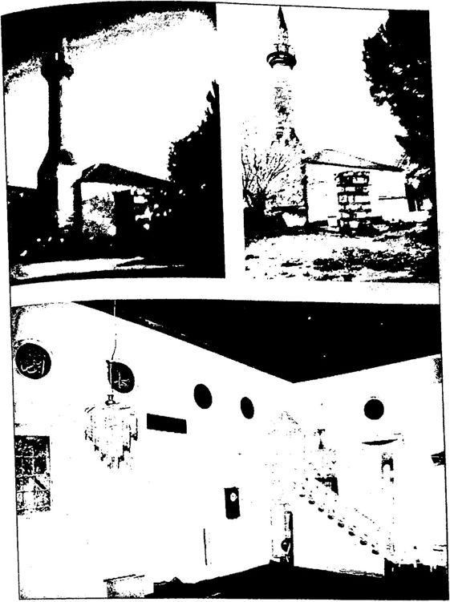 1936’da tamir edilen Kasım Çelebi Camii’nin bugünkü durumu 1941 Yılında 66 Cami Tamir Edilmiştir Osmanlı, son dönemlerindeki savaşlardan dolayı ibadethanelerin bakım ve onarımına para ayıramamıştır. Bu yüzden camilerin de ara larında bulunduğu vakıf eserleri bakımsız kalmıştır. Cumhuriyet bu eserlerin neredeyse hepsini harabe halde devralmıştır. Bunların ona rımları için çare aramıştır. Ancak mevcut bütçe yetersiz kalmıştır. Bunun üzerine 1935’teki Vakıflar Kanunu sonrasında Vakıflar Genel Müdürlüğü’ne harabe durumunda bulunan camilerin tamiri için nor mal bütçe haricinde 1 milyon liralık bir ek bütçe daha ayrılmıştır. İktisadi Yürüyüş adlı derginin 1 Nisan 1941 tarihli 32. sayısında “Cumhuriyet devrinde milli abidelerimize verilen kıymet ve ehemmi yet” başlıklı yazıda “En gayri müsait şartlar altında Vakıflar Umum Müdürlüğü abidelerimizin tamiri işine 1 milyon lira tahsis eylemiştir denilmiştir.
Bir program dahilinde camilerin onarım seferberliği 1936 yılında başlamışnr. Bundan sonraki yıllarda da camilerin onarımı için bütçe dışı ödenekler ayrılmaya devam etmiştir.
| Cumhuriyet devrinde | Yapılan, devam eden ve yapılacak olan tamirler AMaiariaûia ImW ifa m gmyn atnH «utlar * İtada Vakıflar maaaakdtr Mft taa ı,»0,cao lira takaia bat—aktadır.a 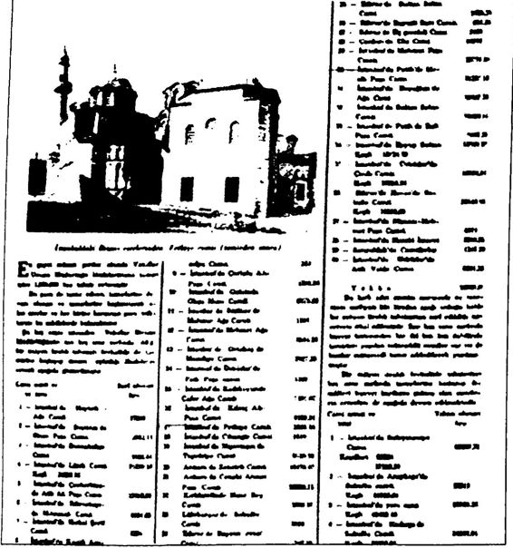 İktisadi Yürüyüş, 1 Nisan 1941
Derginin haberine göre 19241935 arasında onlarca camiyi tamir ettiren CHP hükümeti, 1941 yılında tam 40 camiyi tamir ettirmiş, ge lecek 5 yıl içinde 26 camiyi daha tamir ettirmeyi planlamıştır. Ayrıca tahsis edilen 1 milyon lira haricinde vakıf, hayrat gelirlerinden elde edilen parayla da 8 camiyi daha tamir ettirmiştir. Dahası 40 büyük tarihi caminin tamiri için de gerekli ödenekler ayrılmış ve bu camiler üzerinde etüt çalışmalarına başlanmıştır.
Dergide, tamirine başlanacak camilerle ilgili şöyle bir değerlendir me yapılmıştır, “ Vakıflar Umum Müdürlüğü hayrat tamiri hususunda şu beş sene zarfında gösterdiği faaliyete kesintisiz yirmi sene daha de vam edecek olur ise, yurdumuzun her köşesini süsleyen ve milli san’at tarihimizi ebediyen yaşatacak olan bu kıymetli abidelerimizin ihmal edilmiş, unutulmuş hallerle bugünkü harap manzaraları o zaman, gü zellikleriyle yüzümüzü güldürecektir. Tamir programında ithal ve ke şifleri ihzar edilmiş bir hayli mühim abideler vardır ki tahsisatın arkası geldikçe tamirleri bitenlerin yerine bunların mühimleri sıraya girecek tir. Keşiflerde yazılı miktarlar bilhassa şu müstesna günlerde esbabı mücbire dolayısıyla mütehavvil ise de bir fikir vermiş olmak için 5000 liradan yukarı olan bazı mühimlerini kaydediyoruz. ”
Dergide “Camilerimiz ve Mescitlerimiz” adlı bir yazıda Cumhu riyet yönetiminin, “mabetlere layık oldukları hürmeti gösterdiği”, hü kümetin “ihtiyaca uygun olarak”, özellikle “tarihi ve mimari kıymeti” olan camileri tamir etmek için ödenek ayırdığı, “mabetlere yaraşma yacak değersiz ve kıymetsiz binaları, pejmürde hallileri ise mabetlikten hariç tuttuğu" belirtilerek bunların tamiri için ödenek ayrılmadığı ifa de edilmiştir.
Görüldüğü kadarıyla genç Cumhuriyet cami tamirlerinde, ihtiya ca uygunluk, tarihi ve mimari değere sahip olmak ve cami olamaya cak kadar değersiz ve harabe olmamak koşullarını dikkate almıştır. Bu koşullar doğrultusunda Türkiye genelinde yapılan tasnif çalışma ları sonunda tamir edilecek camiler belirlenmiş ve bu iş için ayrılan olağanüstü bütçe doğrultusunda 19231950 arasında Türkiye’nin dört bir yanındaki yüzlerce cami tamir edilerek yeniden ibadete açılmıştır. İhtiyaç olmadığı için özellikle harabe ve cami olamayacak kadar de ğersiz binalar ise tasnif dışı tutularak ya başka amaçlar için kullanılmış veya satılmıştır. Bunlar içinden en uç örnekleri seçip genç Cumhuriyet’i “cami düşmanı” ilan etmek insafsızlıktır.
|
Tamiri tamamlanan camiler (1941) |
Harcanan para |
|
1 İstanbul’da Heybeüada Cami |
17.000 |
|
2 istanbri Beşfldaş'da Sinan Paşa Cami |
9.982,14 |
|
3 İstanbul'da Dolmabahçe Cami |
8.936,44 |
|
4 İstanbul'da üdel Cami |
21.299,18 |
|
5 İstanbul Çemberttaş'da At* Alı Pasa Camı |
15.003,93 |
|
6 İstanbul EdtmekapTda Mftrimah Cami |
6.851,65 |
|
7 İstanbul'da toka Şeni Cami |
1.224 |
|
8 İstanbul'da Küçük Ayasofya Camfi |
589 |
|
9 İstanbul'da Çorlulu Ah Paşa Cami |
1.350.85 |
|
10 İstanbul Galata Okçu Musa Cami |
6.379,66 |
|
11 İstanbul Sütlüce’de Mahmut Afla Cami |
1.560 |
|
12 İstanbul’da Mehmet Ağa Cami |
2.516,33 |
|
13 İstanbul Ortaköy'de Mecidiye Camii |
2.927.28 |
|
14 İstanbul Üsküdar'da Faik Paşa Camfl |
1.500 |
|
15 İstanbul Karkkûy de Cafer A$a Cami |
1.401,67 |
|
16 İstanbul'da Mtnç Ai Paşa Cami |
4.199,34 |
|
17 İstanbul'da Fethiye Cami |
3.893,28 |
|
18 İstanbul'da Cihangir Camii |
1.519 |
|
19 İstanbul’da Mşantaşn’da Teşviuye Cami |
8.159,90 |
|
20 Ankara'da Zenci* Cami |
19.470,42 |
|
21 Ankara'da Cenabı Ahmet Paşa Camii |
32.898,75 |
|
22 Kırldareinde Hmr Bey CamH |
2.689,75 |
|
23 Lüleburgaz’da Sokullu Cami |
3.056 |
|
24 Edirne’de Beyaz* Evvel Cani |
342,50 |
|
25 Edirne'de Sultan Sehm Camii |
5.025,25 |
|
26 Edirne'de Bayezit Sani Cani |
651,25 |
|
27 Edirne’de Uç şerefeiı Camii |
2.190 |
|
28 Çantan da Ulu Cami |
10.993 |
|
29 İstanbul da Mahmut Paşa Camu |
29.776.80 |
|
30 İstanbul Fatih’te Mesih Paşa Camii |
31.233,13 |
|
31 İstanbul da Beyoğlunda Ağa Camii |
22.432.30 |
|
32 İstanbul'da Sultan Seim Camii |
28.008,95 |
|
33 İstanbul'da Fatih'de Balı Paşa Camii |
64.47,55 |
|
34 İstanbul’da Eyüp Suttan Cami |
13.089,39 |
|
35 İstanbul Üsküdar'da Çınir Cami |
10.058,94 |
|
36 Edirne’de Havza’da Sokuhı Cami |
32.548.05 |
|
37 Istanbulda Nişancı Mehmet Paşa Camii |
4.979 |
|
38 kstanbd’da Haseki imaret Cami |
5.308,85 |
|
39 Zonguldak'ta Camıkebır Cami |
1.547,20 |
|
40 istanbıd Üsküdar’da AHk Valde Cani |
8.291.26 |
252
CHP’nin 1941 yılında, Türkiye'nin dört bir yanında tamirini tamamladığı 40 cami ve tamir bedelleri
|
Tamiri tamamlanmak üzere oian camiler (1941) |
|
|
1 İstanbul’da Süleyman! CamH |
96 307,73 |
|
2 İstanbul 'da Azapkapt'da Sokullu Cami |
58.910 |
|
3 İstanbul'da Yeni Cami |
59.989,36 |
|
4 İstanbul’da Kadırga da Sokullu Camii |
34.992,04 |
|
5 İstanbul’da Sultan Ahmet Cami |
26.855,49 |
|
6 İstanbul'da Şemsi Paşa Cami |
34.773,40 |
|
7 Bursa’da YbşI Cami |
14233,60 |
|
8 Bursa'da Yıtdmm Camii |
16.757,20 |
|
9 Çerkaş’de Muradı Rabi Camii |
8.974 |
|
10 Sinop’da AJâaddin Camü |
10.000 |
|
11 Bolu'da YHAnm Camii |
15.451,44 |
|
12 Malatya’da Arslan Bey Camii |
6.547 |
|
13 Rize’de Olla Cami |
3.000 |
|
14 Trabzon’da Hatuniye Camii |
4.290,87 |
|
15 Kars Camii |
751,60 |
|
16 Erzincan'da tzzet Paşa Camii |
7.408,10 |
|
17 Bozüyük’de Kasım Paşa |
48.049,69 |
|
18 ElmalI’da Ömer Paşa Camii |
38.236,32 |
|
19 Afyon’da Gedi Ahmet Paşa Camii |
57.904.58 |
|
20 Kayseri'de Ahmet Paşa Camii |
28.890 |
|
21 Ytagat’da Çapanoğlu Camii |
15.500 |
|
22 Diyarbakır’da Behram Paşa Camii |
15.000 |
|
23 Divrik’de Ulu Cami |
15.000 |
|
24 Tokat’da Ali Paşa Camii |
9.193 |
|
25 İstanbul’da Bayezit Cami |
5.000 |
|
26 Ankara'da Hacı Bayram Camii |
502.89,71 |
|
Yekûn (Toplam) |
681.811,13 lira |
CHP’nin 1941 yılında, Türkiye’nin dört bir yanında tamirini tamamlamak üzere olduğu 26 cami ve tamir bedelleri
|
Hayrat tertibinden tamiri yapılan camiler |
||
|
1 |
Malatya’da Arslan Bey Camii |
6.337 |
|
2 |
İstanbul Sarıyer’de Çarşı Camii |
1.797 |
|
3 |
Bolayır’da Süleyman Paşa Camii |
1.357,06 |
|
4 |
Gebze’de Orhan Bey Camii |
1.010 |
|
5 |
Konya’da Eşrefofllu Camii |
10.000 |
|
6 |
Manisa'da Muradiye Camii |
10.000 |
|
7 |
İzmir’de Hisar Camii |
15.335.90 |
|
8 |
İzmir’de Şadırvanlı Camii |
10.991,90 |
|
|
Yekûn (Toplam) |
57.028.86 lira |
CHP’nin 1941 yılında Türkiye’nin dört biryantnda “hayrat tertibinden” tamirini yaptırdığı 8 cami ve tamir bedelleri
|
Kesif bedel 5 bin liranın üzerinde camilerden bazıları |
|
|
1 İzmit'te Pertev Paşa Camü |
35.940 |
|
2 Samsun'da Dördüncü Mehmet Camii |
41.495,29 |
|
3 İstanbul'da Alı Pasa Cami |
11.795,80 |
|
4 İstanbul'da Hoca Paşa Camii |
11.293,53 |
|
5 İstanbul'da Şehzade Cam» |
28.683,35 |
|
6 İstanbul'da Fatih Cami |
63.675,50 |
|
7 İstanbul da Üsküdar da Ayazma Camii |
20.662,70 |
|
8 İstanbul da Üsküdar'da Cedit Vakte Camfi |
10.359,90 |
|
9 İstanbul'da Kasımpaşa'da Camukebır |
17.150,05 |
|
10 İstanbul'da Eyüb’de Zal Mahmut Paşa Camii |
9.891 |
|
11 İstanbul da ZeyreK'de Kilise Camii |
8.490 |
|
12 İstanbul'da Tophane'de Nusratiye Cami |
12.236,18 |
|
13 Tekirdağ'da Rustem Paşa Camii |
7.815 |
|
14 Gebze Çoban Mustafa Paşa Camii |
30.661 |
|
15 Çorlu'da Suleymaniye Camii |
12 981.10 |
|
16 Silvan’da Şalâhaddm Eyyubi |
30.000 |
|
17 Ladk’de Bülbül Hatun Camii |
47.693.06 |
|
18 Ladik'de Sultan Mehmet Cama |
41.495,29 |
|
19 Lüleburgaz'da Kadı Alı Camii |
8.730 |
|
20 Edirne’de Bayezit Sanı Camii |
30.000 |
|
21 Edirne'de Muradiye Camii |
10,000 |
|
22 Edirne'de Üç şerefeli Cami |
10.000 |
|
23 Harput'da Sare Hatun Camii |
10.000 |
|
24 Antalya'da Teke* Mehmet Paşa Cami |
6.763 |
|
25 Antalya'da Kuyucu Murad Pasa Camii |
15 000 |
|
26 KiSs’de Canpulat Cami |
15.030,14 |
|
27 Niğde'de Alaaddın Camii |
32.670,29 |
|
28 Kayseri'de Merzifon Kara Mustafa Paşa Cami |
9.838 |
|
29 Bursa da Ulu Camii |
39.562,30 |
|
30 Bursa’da Muradye Camii |
15.000 |
|
31 Bursa da Hudavendıgar Camii |
10.000 |
|
32 Manisa'da Muradiye Camii |
35.940,08 |
|
33 İzmir de Alsancak da Camii ınsaası |
25.000 |
|
34 Afyon’da SandüdTda Çarşı Camii |
5.476,21 |
|
35 İstanbul da Bayezit Camii |
14.596,56 |
|
36 İstanbul da Üsküdar'da Atik Valide Şadırvanı |
9.435 |
|
37 Konya'da Sultan Alaaddın Camii |
35.000 |
|
38 Ankara da Saman Pazarı'nda Kurşunlu Camii |
12.000 |
|
39 İstanbul da Balat da Ferruh Kethüda Camii |
16.000 |
|
40 İstanbul da Nuru Osmaniye Camii |
20.486,90 |
|
Yektin (Toplam) |
828.843,90 |
CHP’nin 1941 yılında etüt ederek tamir etmeyi planladığı tarihi camilerden keşif bedeli 5000 liradan fazla olanlar ve keşif bedelleri
Dergide, yukarıdaki grafikler verildikten sonra bu grafiklerle ilgili şöyle bir değerlendirme yapılmıştır:
“İşte şu yukarıda yazılı üç cetvelden anlaşılıyor ki Vakıflar Umum Müdürlüğü beş seneden beri hayratın imarı için çizdiği bir program üzerinde yürüyerek tamire başladığı ilk iki cetvel yekünü altmış altı camiden kırk tanesinin tamiratını ve inşaatını başarmış ve yirmi altı tanesinin ikmaline çalışmaktadır. Bir taraftan da ileride mali kuvvet ve kudreti yettikçe tamire başlamak üzere kırk büyük abide üzerinde etütler yaptırmıştır ve etütlerine devam etmektedir. Yani inşa olunan veya esaslı tamir gören abidelerde Vakıflar Umum Müdürlüğünün tatbikine çalıştığı ve ulaşmak istediği gaye, mabetlerin harimlerini la ubali bir gezinti yeri veya çocuklara oyun meydanı veya pazar yeri olmaktan men etmek, taşları devrilmiş, sırasını mevkiini kaybetmiş, çalı çırpı üzerlerini örtmüş kabristan harabeleri bazı mabetlerin harim lerinde yürekleri sızlatan hürmetsizlik ve çirkinlik olduğundan mabede bir başka ruhaniyet bahşedecek derecede kabirlerin tanzim ve tamirleri ve avlunun tarhı ve bir çiçek bahçesi haline ifrağı suretiyle mabedin muhit ve siluetine layık olduğu güzelliği ve temizliği temin etmektir. Camilerin içerlerinde yapılan secdelikler ve pabuçluklar için tedbirler bu gayenin temini için başlangıç mesabesindedir. ”
Belge ve bilgiler, tek parti CHP’nin 19231950 arasında yüzlerce tarihi camiyi tamir ederek, yıkılıp yok olmaktan kurtardığım gözler önü ne sermektedir. Ancak Atatürk Cumhuriyeti’ni din düşmanı göstermek isteyen iç ve dış odaklar yıllarca bu basit gerçeği saklamışlar, hatta Ata türk Cumhuriyeti’ni, “camileri yıkmakla yok etmekle” suçlamışlardır.
Camilerin İstismarım Atatürk ve İnönü Önlemiştir Cumhuriyet’in ilk yıllarında bazı yerel yöneticiler tarafından eski eserlere gereken önemin verilmemesi üzerine bizzat Atatürk, araların da cami, mescit ve türbelerin de bulunduğu eski eserlerin korunmasını istemiştir.
Atatürk, 1931 yılındaki Konya gezisinde Selçuklu döneminden kalan Alaaddin Camii’nin ve ek yapılarının orduya tahsis edildiğini görünce bu durumdan çok rahatsız olmuş, Başvekil İsmet İnönü’ye
çektiği bir telgrafla derhal camilerin ve ek yapılarının boşaltılıp resto rasyonunun yapılmasını istemiştir.
İşte o telgraftan bir bölüm:
"Başvekil İsmet Paşa Hazretlerine.
Son tetkik seyahatimde muhtelif yerlerdeki müzeleri ve eski sanat ve medeniyet eserlerim de gözden geçirdim. (...)
Konya'da asırlarca devam etmiş ihmaller sebebiyle büyük hır ha rahi içinde bulunmalarına rağmen sekiz asır evvelki Türk medeniyetle rinin hakiki mimarı şaheserleri sayılacak kıymette bazı mehanı vardır. Bunlardan bilhassa Karatay Medresesi, Alaaddtn Camii. Sahip Ata Medresesi, cami ve türbesi, Sırçalı Mescit ve İnce Minareli Camı derhal ve müstecclen tamire muhtaç haldedir. Bu tamirin gecikmesi, bu abide lerin kamilen indirasmı mucip olacağından, evvela asker işgalinde bu lunanların tahliyesinin ve kaffesinin mütehassıs zevat nazaretıle tamın temin buyrulmasın! rica ederim. Cazı Mustafa Kemal."* Bu belge, “cami düşmanı” olarak suçlanan genç Cumhuriyetin ve CHP’nin kurucusu Atatürk'ün özellikle tarihi camilerin ve türbe lerinin korunmasına büyük önem verdiğini gözler önüne sermektedir. Atatürk, Konya'da Karatay Medresesi, Alaaddin Camii, Sahip Ata Medresesi, cami ve türbesi, Sırçalı Mescit ve İnce Minareli Cami’nin derhal tamir edilmesini; ayrıca asker işgalinde olan camilerin de der hal boşaltılarak tamir edilmesini istemiştir. Bu nedenle özellikle tarihi camilerin gördüğü zararlardan Atatürk’ü sorumlu tutmak son derece yanlış ve gerçekdışı bir yaklaşımdır. Atatürk, Türkiye’deki bütün tari hi eserler gibi tarihi camilerin de aslına uygun olarak restore edilerek korunmasını istemiştir.
Atatürk’ün tarihi camilerin ve türbelerin korunması konusundaki bu duyarlılığını İsmet İnönü de devam ettirmiştir. İnönü değişik zamanlarda yayımladığı genelgelerle yetkililerden camilerin korunmasını istemiştir.
Örneğin 31 Ocak 1934 tarih ve 6 / 370 sayılı Başvekâlet genelge siyle, İmar hevesi yüzünden eski eserlerin ytktırıldığıntn görüldüğü belirtilerek, “Bundan sonra Maarif Vekaletine sorulmadan hiçbir ese rin yıktırılmaması” istenmiştir.
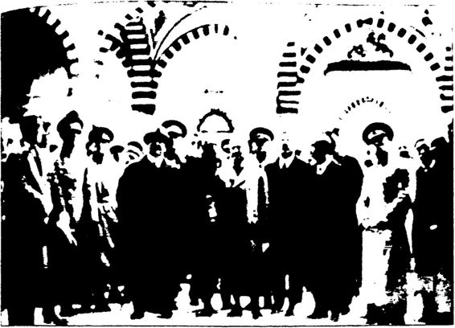 Atatürk Edirne’de Selimiye Camii ve Külliyesi’rti gezerken i25 Aralık 1930:
Nisan 1936’da doğrudan Başbakan İsmet İnönü, “Diyarba kır'daki Hiisreviye ve Behramiye camilerinin derhal boşaltılmast ve bundan sonra camilerin ve eski eserlerin asıl görevinin dışında başka amaçla kullanılmamasına dair” bir genelge yayımlamıştır.* Ancak bu tehditkâr genelge bile taşradaki idarecileri durdura mamış olmalı ki Başvekâlet 14 Ekim 1936 tarihli başka bir genelge ile, “Askerler tarafından kullanılırken eski eser niteliği taşıdıklart için Milli Savunma Bakanlığından alınan fakat bu defa valilik onayı ile Ziraat Bankası’na buğday ambarı yapılmak üzere verilen Diyarbakır Hiisreviye ve Behramiye camilerinin boşaltılmast ve Vakıflar Genel Miidiirliiğu nün onayı alınmadan vakıf eserlerin ve diğer uiırelere ait eserlerin amaçları dışında kullanmamaları”m istemiştir.'* Son olarak 12 Mart 1940 tarihli Başbakanlık genelgesiyle “İmar il Yapı ve Yollar Kanunu”na dayanarak “Belediyelerin vakıf eserlerin ar salarım parasız istimlak ettikleri, bazı belediyelerce de arsasını istimlak etmek için önce üzerindeki sağlam binayı ‘haraptır' diye yıktıklarının görüldüğü, bu gibi emrivakilere meydan verilmemesi” istenmiştir.
Bu belgelerden görüleceği gibi Cumhuriyet’in ilk yıllarında “iller de idarecilerin ve belediye başkanlarmın 'vakıf eserleri haraptır,’ diye aralarında bazı camilerin de bulunduğu bu eserleri çabucak yıktıkları” anlaşıldıktan sonra Atatürk ve İnönü olaya el koyarak tarihi değeri olan bu eserlerin yıkımlarını önlemiştir. Belgelerden ayrıca, hükümet ten habersiz bazı yerel yöneticilerin taşrada bazı camileri “amaçlan dışında kullandıkları” anlaşılmaktadır. Hükümet bu durumu fark eder etmez yerel yöneticilere gönderdiği genelgelerle “Bu camilerin derhal boşaltılarak Vakıflar Genel Miidürlüğü’nün onayı alınmadan amaç dı şında kullanılmaması gerektiğini, ” bildirmiştir.
Yani Başbakan R. Tayyip Erdoğan’ın, Tek Parti döneminde amaç dışı kullanılan camilerin fotoğraflarını göstererek, “İşte Tek Parti, İs met İnönü camileri böyle yatakhane, depo, ahır yaptı!” demesi gerçe ği yansıtmamaktadır. Çünkü yukarıdaki belgelerde de açıkça görül düğü gibi bu şekilde amaç dışı kullanılan bazı camiler, Atatürk’ten, İnönü’den, hatta hükümetten habersiz bir şekilde bazı işgüzar yerel yöneticiler ve komutanlar tarafından bu hale getirilmiştir. Nitekim Atatürk’ün cumhurbaşkanlığı ve İnönü’nün başbakanlığındaki hükü met bu durumu öğrenir öğrenmez harekete geçerek bu eserlerin ba hanelerle yıkılmamasmı, korunmasını ve amaç dışı kullanımı için de mutlaka izin alınmasını şart koşmuştur.
Bu gerçekler ortadayken Atatürk’ü ve İnönü’yü “cami düşmanı” göstermek gerçeği tersyüz etmektir.
Bugün Camiler Açıksa ve Ezan Sesleri Hâlâ Yankılanıyorsa Her şeyden önemlisi, “cami düşmanı” olmakla suçlanan Atatürk ve İnönü olmasaydı, bu vatanseverlerin kelle koltukta verdikleri o kut sal mücadele olmasaydı, 15 Mayıs 1919’da İzmir’e çıkıp çoluk çocuk demeden korkunç bir katliama başlayan Yunanlılar, camileri yakıp
yıkacak, ezanları susturacak ve işte o zaman camiler; ahır, tuvalet, eğ lence merkezi yapılacak, hatta Ayasofya’ya çan takılacaktı. Nitekim daha önce belirttiğim gibi işgal yıllarında İzmir Seferihisar Düzce kö yündeki Kasım Çelebi Camii’nin başına gelenler birçok caminin başına gelmiştir.
İzmir’in işgal edildiği günlerde, Yunanlılar camilere saldırmış, camileri yakıp minareleri yıkmış, Yunanlılardan cesaret alan ayrılıkçı Rumlar da camilerdeki halı ve kilimleri çalmışlardır. O günlerdeki bir gazete haberine göre, “Şehrin camilerinin de Rumlar tarafından basıl dığı ve birçok kıymetli halı ve kilimin kaçırıldığı da tespit edilmiştir. Bu arada Hisar ve Bölükbaşı camilerinde bir tek halı ve kilimin kalmadığı görülmüştür. ”
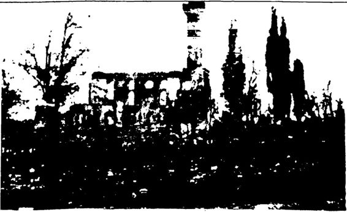 Fotoğraf altı: Yunanlılar tarafından yakılan Orhangazi kasabası camii Şerifi (Orhangazi kasabası tahminen 1000 haneli olup Yunanlılar tarafından bilcümle emlakini diniyye ve resm 'ıyesiyle kamilen ihrak ve ahalinin kısmi azami katil ve imha ve eşya ve nakitleri gasb ve yağmalanmıştır).
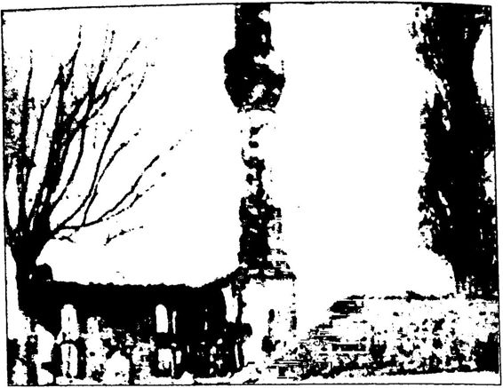 Yunanlılar tarafından yakılan Nasrettin Paşa Camii Sayın Başbakan R. Tayyip Erdoğan, bugün bu ülkenin camileri açıksa ve bugün bu ülkenin semalarından hâlâ ezan sesleri yükseliyor sa bunu o Atatürk’e, o İsmet İnönü’ye, o Cumhuriyet’i kuran iradeye borçluyuz.
Atatürk ve İnönü dönemlerinde camiler hep açık olmuştur. Baş bakanlık Cumhuriyet Arşivi’ndeki belgelere göre hükümet camilerin sorunlarıyla da ilgilenmiştir. Örneğin İnönü döneminde 16 Şubat 1942’de alman bir kararla Camilerde namaz kılarken başlara konan mendil, takke ve kasket hususunda belli bir intizam sağlamak için va izlerin halkı aydınlatması” istenmiştir. 17 Kasım 1948 tarihli başka bir kararla da “Cep ve duvar takvimlerindeki namaz vakitlerinde ihti lafa düşmemek için, bunları çıkaranların Müftülükten alınacak cetvele göre hareket etmeleri” istenmiştir. Bir örnek de Atatürk döneminden verelim: 25 Mayıs 1926 tarihli bir kararla “Müezzinlerden bazıları nın vaktinden evvel veya sonra ezan okuduklarından ezanın vaktinde okunması için müezzinlere tebligat yapılması” istenmiştir.
Görüldüğü gibi genç Cumhuriyet’in camilerinde ezanlar okun makta, namazlar kılınmaktadır. Dahası hükümet bu konudaki en ufak aksaklıklarla bile ilgilenmektedir.
R. Tayyip Erdoğan’ın Unuttuğu Gerçek: MENDERES’İN YIKTIRDIĞI CAMİLER Başbakan R. Tayyip Erdoğan, ne zaman “CHP, İnönü camileri yıktı, sattı, depo ve ahır yaptı!" dese hemen ardından “DP, Mende res dinimize şöyle güzel hizmetler etti!" demektedir. Böylece CHP ve İnönü’yü “dine zarar vermekle” suçlarken, DP ve Menderes’i “dine hizmet etmekle” övmektedir.
Erdoğan, 30 Eylül 2012 tarihli konuşmasında şöyle demiştir:
“1940’lt yıllar boyunca Türkiye’de millete, milletin değerlerine, kutsallarına karşı aleni bir savaş yürütüldü. Bu ülkede camilerin kapı larına kilit vuruldu. Camiler, ahıra, depoya, müzeye çevrildi. Kur’anı Kerim’i öğrenmek de, öğretmek de, okumak da yasaklandı. (...) Mer hum Adnan Menderes’in tersine çevirdiği bu süreç 1960 müdahalesiy le maalesef rejimin hücrelerine, rejimin genlerine kadar işledi. (...) O Menderes camilerin kapılarındaki kilitleri söktüğünde insanlar o cami lerde şükür namazları kıldılar...”
R. Tayyip Erdoğan, Menderes’in camilerin kapılarındaki kilitleri söktüğünü söylüyor. Aslında çok doğru, ama eksik! Çünkü Menderes sadece camilerin kapılarındaki kilitleri değil camilerin her şeyini söktü! Hem de buldozerle! Menderes’in elinin değdiği camilerin yerinde bu gün yeller esmekte!
R. Tayyip Erdoğan’ın “cami söyleminin” Mehmet Şevket Eygi’den etkilendiği açık. Ancak başta Başbakan Erdoğan olmak üzere AKP’li yetkililer, Mehmet Şevket Eygi’nin yazıp söylediklerini bile işlerine gel diği şekilde kullanmışlardır. Şöyle ki Eygi, Cami Kıyımı adlı kitabında, Cami kıyımı 195060 arasında da devam ederek yol açma bahane siyle nice tarihi caminin temellerine kadar yıkılmasına sebep oldu,” diyerek DP ve Menderes döneminde yıkılan ve satılan camilerden de söz etmiştir. Hatta kitabının kapağına da DP ve Menderes döneminde yıktırılan iki caminin fotoğrafını koymuştur. Ancak başta Başbakan Erdoğan olmak üzere AKP’li yetkililer cami söylemlerinde hiçbir za man bu durumdan söz etme gereği duymamışlardır.
Araştırmalarım sonunda Menderes zamanında sadece İstanbul’da 60’tan fazla caminin yol açma ve değişik imar faaliyetleri nedeniyle yıkıldığını öğrendim. DP döneminde İstanbul Tophane, Karaköy, Fa tih, Eminönü, Saraçhane ve Beşiktaş’ta tam anlamıyla bir tarihi cami katliamı yaşanmıştır.
DP ve Menderes döneminde İstanbul’daki tarihi cami ve mescit katliamı İstanbul’un imarı için getirilen Fransız Mimar Henri Prost ve Alman Prof. Hans Högg eliyle gerçekleştirilmiştir. Zeki Bağlan, 2010 yılındaki bir konferansında bu gerçeği şöyle ifade etmiştir:
“(...) Hoca Sinan tarafından yaptırılan Azepler Mescidi Fatihli yıllardan kalmadır ama hamamı ile birlikte yola katılır. Kanuni devri hatırası Tiifenkhane Mescidi üç kuruşa satılır. Saraçhane Mescidi’nin üzerinde ise şu an resmi daireler vardır.
Prost bu kadarla yetinmez. İkinci yıkım furyası ile (195557) yol kenarında kalan mescitleri de ayıklar. Zeytinciler Mescidi yok edilir. Voynuk Şiicaeddin Camii'nin yıkım emrini kimin verdiği hiç anlaşıla maz. Hazire bile darma duman edilir. İstanbul’un ilk Belediye Başkanı Hızır Bey'in mezarı ortada kalır. Arsalar tekrar camileştirilemesin diye hızla betonlaştırılır ki bu alanda İMÇ blokları yayılır... Sadece 5657 yılları arasında 54 camiyi yıktırır. Bunun yanında hamamların, tekke lerin, sebillerin, çeşmelerin hesabı yapılmaz...”
İstanbul’da Cumhuriyet’in ilk yıllarında başlayan imar çalışmala rı, 1940’lardan itibaren H. Prost eliyle maalesef şehrin tarihi dokusuna zarar verecek biçimde gerçekleştirilmiştir. İmar çalışmalarının ilk aşa ması 1943’te sona ermiştir. O ilk aşamada, Azeblar Camii, Sekbanbaşı Mescidi, Firuz Ağa Mescidi, Revani Çelebi Camii yıkılmıştır. Yıkım lara 19501960 arasındaki DP döneminde devam edilmiştir: 1953’te Saraçhane Mescidi (Mimar Ayaş Mescidi), Karagöz Mescidi gibi tarihi mescit ve camiler yanında tarihi medreseler, çeşmeler ve mektepler de yıkılmıştır.
Prof. İlber Ortaylı, Milliyet gazetesinde “Cami Olmaktan Çıkan Camiler” başlıklı yazısında Menderes’in İstanbul’da Mimar Sinan’ın mescitlerini, camilerini buldozerle yıktırdığını, ancak hiçbir “Müslü manın” nedense bu gerçekten söz etmediğini şöyle ifade etmiştir:
“70 ila 50 sene evvelinin camiyi ambar yapma, kışla yapma olay larını tekrarlamak ne tarihi açıklamaya yeter ne de politika yapmaya, üstelik yeterince delil de ileri sürülmüyor. Falan mahallelerdeki cami lerin depo yapıldığı söyleniyor ama Menderes’in imar çalışmaları sıra sında rölöveleri ve albümleri bile çıkarılmadan tarihe gömülen Mimar Sinan mescitlerinden, Beyazıt’ta yıkılan Kemankeş Kara Mustafa Paşa Camii ve medresesinden, Topkapı’daki Kara Ahmet Paşa’nın Mimar Sinan eseri zarif sebilinden (ki bence istisnai bir Rönesans tipi fon tanaydı, inşaat makinelerini dayayıp yıkılışını gözümle gördüm) bah seden Müslüman yok. Bu memleketin tahribi şu veya bu grubun işi değildir. Toptan yaptığımız bir kepazeliktir. ”
İstanbul’un tarihini en iyi bilen Türkiye’nin sayılı sanat tarihçile rinden Prof. Dr. Semavi Eyice, Milliyet gazetesinde Neşe Mesutoğlu’na verdiği röportajda, Menderes’in bazı camileri yıktırdığını doğrulamıştır.
1950’lerde Yeni Sabah gazetesi yazarı olan Semavi Eyice, Adnan Menderes’in Sekban Paşa Mescidi, Mimar Ayaz Camii, Velide Camii’nin türbesi gibi dini eserleri yol yapmak için yıktırdığını anlatmıştır.
Eyice, kendisinin bu cami, mescit ve türbelerin yıkılmasına gazete sinde itiraz ettiğini ancak uyarıldığını belirtmiştir. Eyice, Türk tarihi için önemli olan Zeyrek evlerinin de bu dönemde yıkıldığını söylemiştir.
Prof. Semavi Eyice, Sanat Alemi dergisinden Ülkü Ö. Akagündüz’e verdiği röportajda da bu gerçeğin altını çizmiştir. İşte Eyice’nin o rö portajından bazı bölümler:
“Menderes döneminde nice ibadethaneler şuursuzca yıkıldı. (Menderes’in) adına görkemli bir türbe yapıldı; ama günahı da çoktu hani,” diyen Eyice’ye göre İstanbul’da geniş caddelere, meydanlara ve yeşil sahalara karışıp giden elliden fazla caminin bazısı, projeleri hiç tehdit etmediği halde biraz da keyfi uygulamalarla ortadan kaldırıl mıştır.
Semavi Hoca, Menderes’in açtırdığı Atatürk Bulvarı’na kurban giden iki camiden şöyle söz ediyor:
“Bozdoğan kemerinden Aksaray’a inerken sağda iki küçük cami vardı. Baba Haşan Alemi ve Oruç Gazi camileri. Baba Haşan Alemi’yi daha o zaman vakıflar kiraya vermişti. Hatta bir öğretmen oturuyordu içinde. Cadde üstünde olmamasına rağmen yıkttlar onu. Oruç Gazi mamurdu, kullanılıyordu. Hiç lüzumu yokken yıkıldı o da. Bulvar açıl dığında, dört tarafında servi ağaçlarıyla çok şirin bir durumu vardı, caddeden dışarıda ve biraz çukurdaydı zaten. Kimin aklına estiyse, lü zumsuz burada dediler, yıktılar.”
Semavi Eyice, Menderes döneminde İstanbul dışındaki şehirlerde de tarihi camilerin yıkıldığını belirtmiştir: “Adana’da kentin göbeğin de, camisi, medresesi, kütüphanesiyle görkemli bir külliye düşünün. lbSOlerde Cafer Paşa yaptırmış, 1950’de cadde genişleyecek bahane siyle yıkdmış. Ne var ki arsa hâlâ boş, külliye yıkıldığı ile kalmış, şeh rin anıtsal yapısının yerinde şimdi çömlekçi var. ”
İşte DP (Menderes) döneminde İstanbul’da yıktırılan tarihi cami lerden bazıları:
• Saraçhane’de Horhor Caddesi’nin köşesinde Amcazade Külliyesi’ nin önünde trafik ışıklarının yerindeki 1467’de yapılmış Mimar Ayaş Mecidi (Saraçbaşı Mescidi) 1958’de yol yapım çalışmaları sırasında, yeniden yapılmak bahanesiyle yıkılmış yeniden yapıl madığı gibi banisinin kabri de yok edilmiştir.Menderes, yol açma ve değişik imar faaliyetleri nedeniyle sade ce İstanbul’da 60’tan fazla tarihi camiyi yıktırmıştır. Bunlara, benzer amaçlarla Anadolu’da yıktırılan tarihi camileri de ekleyince bu sayı yüzleri geçmektedir.
İşin garip yanı İstanbul’un imarı sırasında yıkılan bu camilerin DP’nin imar planı gereği tamir edilmesi ve çevrelerinin açılması gere kiyordu. Çünkü imar planında: “Kent içi trafiğin rahatlatılması, mey danların ve camilerin çevrelerinin açılması, camilerin ve dini yapıların restorasyonunun yapılmasından” söz edilmiştir.
Tarihi camilerin bakım ve onarımı konusunda çıkarılan yasaya rağmen İstanbul’un birçok tarihi camisini yıktıran DP ve Menderes, İstanbul’un abidevi camilerine de ilgisiz kalmıştır. Bu durum dönemin basınınca eleştirilmiştir. Örneğin Sultanahmet Camii’nin etrafının ge cekondularla kuşatılmasını ve bakımsızlığını 1953 yılında Metin En gin, Cumhuriyet gazetesinde şöyle eleştirmiştir:
“İstanbul’un en büyük tarihi abidelerinden olan Sultanahmet Ca mii gecekonduların ve usulsüz inşaatın istilası altında... Üç beş teneke parçası ya da taş bulan her şahıs caminin duvarına bitişik bir gecekon du inşa ediyor. Sultanahmet Camii’nin hali ise büsbütün utanç verici. 1950’de Vakıflar tarafından tamir edilirken bir amelenin dikkatsizliği yüzünden kül olan, camiye bitişik mahfili hümâyûn üç seneden beri harap ve yanık bir vaziyette bırakılmış. Bu feci manzara muhteşem caminin bütün güzelliğini ortadan kaldırmaya kafi geliyor. Vakıflar Umum Müdürlüğü acaba neden burasını tamir edip camiyi bu çirkin vaziyetten kurtaramaz.”
İstanbul’un imarı sırasında 1940’lardan 1960’lara kadar çok sa yıda tarihi caminin yıktırıldığı bir tarihi gerçektir. 1940’larda İnönü döneminde de özellikle İstanbul’da yine imar çalışmaları nedeniyle maalesef bazı tarihi camiler yıkılmıştır. Ancak yine İnönü döneminde daha önce anlattığım gibiyüzlerce tarihi cami de tamir edilmiştir. Bu tarihi cami yıkımları konusunda sadece İnönü'yü ve CHP’yi suçlamak yanlıştır. Çünkü DP ve Menderes döneminde özellikle İstanbul’da tam bir tarihi cami kıyımı yaşanmıştır.
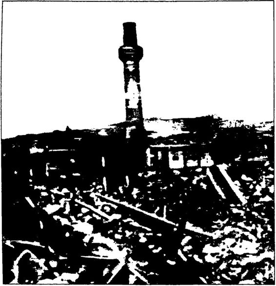 Yıkılan camilerden biri 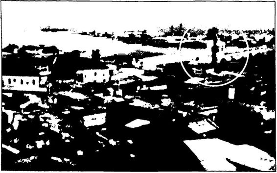 Adana’da cadde genişletmek bahanesiyle 1950’lerde yıkılan tarihi Cafer Paşa Camii 266
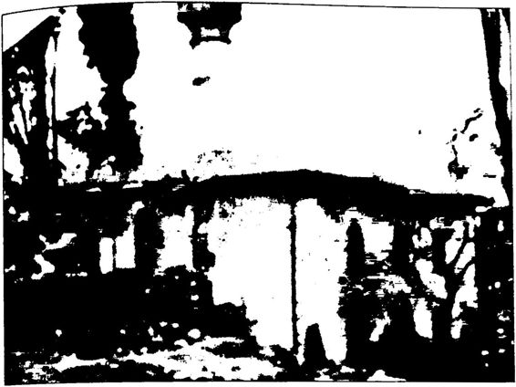 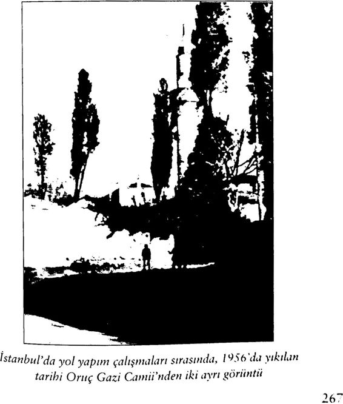
268
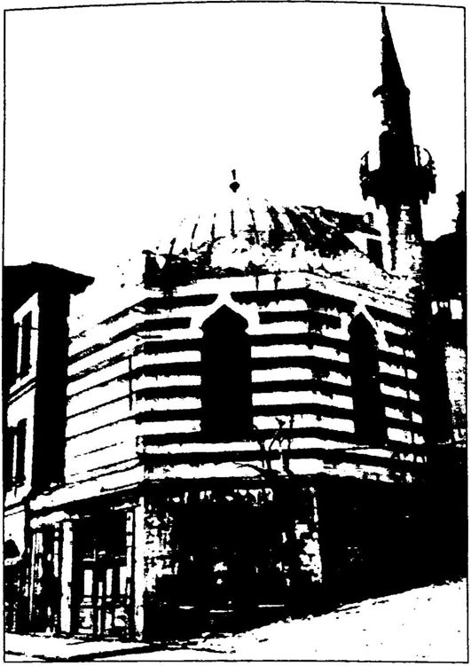 İstanbul’da yol yapım çalışmaları sırasında, I957’de yıkılan tarihi Süheyl Bey Camii (yakından görünüm)
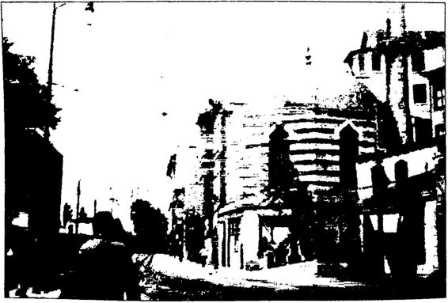 İstanbul’da yol yapım çalışmaları sırasında, 19.57’de yıkılan tarihi Süheyl Bey Camii (uzaktan görünüm)
Menderes’in Yıktırdığı Karaköy Camii Sultan II. Abdülhamid döneminde, 1893’te İstanbul’a gelen ve daha sonra saray mimarı olarak 1909’a kadar İstanbul’da kalan İtalyan Mimar D’Aronco’ya Karaköy’de Merzifonlu Kara Mustafa Camii’nin yerine yeni bir cami yapması teklif edilmiştir. Bunun üzerine İtalyan Mimar D’Aronco o dönem Batı’da moda olan “Art Nouve” tarzında Karaköy Camii’ni inşa etmiştir. İtalyan mimar, ahşap akşamlı, merdi venle üst kata çıkılacak (fevkani) şekilde bir mimari üslup geliştirmiş tir. Böylece çok özgün mimarili bir cami ortaya çıkmıştır. 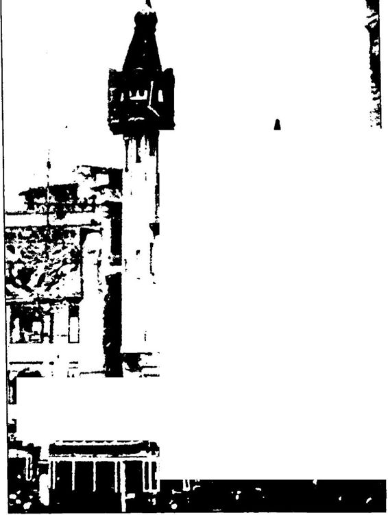 Karaköy’de kıyıda, Galata Köpriisii’ne bakarı Ziraat Bankası’nın (bir zamanlar Avusturya Bankası) hemen arkasında yer alan, fotoğraftaki bu küçücük, şirin ve zarif cami, 1958’de DP döneminde Menderes tarafından yol genişletmesi bahanesiyle yıkılmıştır. Oysaki uzmanlara göre eğer amaç gerçekten de meydan veya yol genişletmesi ise caminin yıkılmasına gerek yoktu. Nitekim bu cami ile aynı hizada bulunan Ziraat Bankası'na dokunulmadan yol genişletilmiştir.
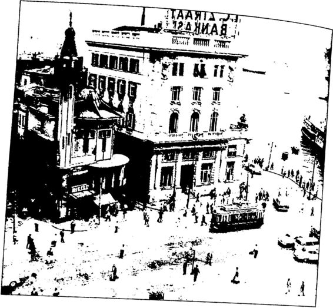 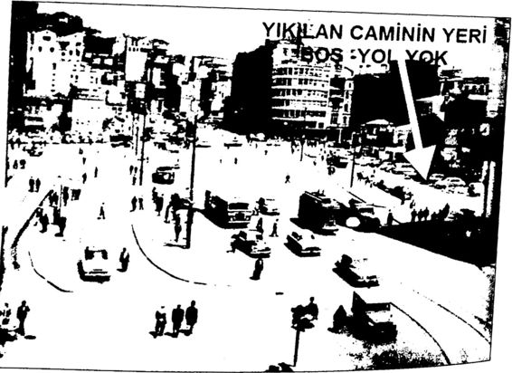 Menderes bu güzelim tarihi camiyi yol genişleteceğiz diye ancak caminin yerine yol yapılmadı. Bugün Karaköy Camii nın yerinde bir otopark var.
Sürekli “Tek parti CHP ve İnönü camileri kapattı! Camileri sat tı!" diye sızlanan Başbakan R. Tayyip Erdoğan neden hiçbir zaman “DP ve Menderes de tariki camileri yıktı," demez? Daha da önemlisi “Tek Parti döneminde açılan Halkevleri ve Köy Enstitülerini DP ve Menderes kapattı. Böylece Türk aydınlanması büyük bir darbe yedi,” demez? 1951’de DP ve Menderes, Türkiye’nin dört bir yanındaki 478 Halkevi merkezini, 5000 Halkevi şubesini ve 4000 Halkodasını ka patmıştır. 1954’te de o güne kadar 25.000 öğretmen yetiştiren Köy Enstitülerini kapatmıştır. Böylece Atatürk’ün Aydınlanma Savaşı’na büyük bir darbe vurmuştur.
Asla unutulmamalıdır ki ilk emri “oku” olan İslam dinine, ihtiyaç fazlası camileri kapatanlardan, farklı amaçlarla kullananlardan önce okumaya, eğitime, toplumsal aydınlanmaya darbe vuranlar daha bü yük zarar vermiştir.
AKP’nin Sattığı Camiler, Yıktığı Kur’an Kursları Başbakan R. Tayyip Erdoğan her fırsatta tarihin tozlu sayfalarını açıp, “CHP, İnönü camileri kapattı! Camileri sattı!” diyor. Tarihi kulla narak CHP’yi köşeye sıkıştırmaya çalışıyor. Ancak bunu yaparken fena halde açık veriyor. Birincisi, CHP’nin, İnönü’nün kapattığı, sattığı cami lerden söz ederken DP’nin ve Menderes’in buldozerle yıktığı tarihi cami lerden söz etmiyor. İkincisi de başında bulunduğu AKP’nin 10 yıllık ikti darı döneminde Türkiye’de birçok camiyi sattığını bilmezlikten geliyor!
Yeri gelmişken Başbakan Erdoğan’ın bilmezlikten, görmezlikten geldiği bu gerçeği kendisine hatırlatalım. Yandaş basının bütün karart malarına rağmen, malum çağımız bir iletişim ve bilgi çağı, bu nedenle de hiçbir sır, sır olarak kalmıyor. AKP’nin sattığı camiler de bir bir açığa çıkıyor.
İşte basına yansıdığı kadarıyla AKP’nin 10 yıllık cami sicili:
2010 yılında AKP, İzmir’de Foça Kozbeyli Köyü Camii’ni satışa çıkarmıştır. Basma yansıdığı şekliyle, “TBMM’de gece yarısı operas yonuyla 2B yasasım çıkaran AKP iktidarı, şimdi Kozbeyli köyünü, içindeki tarihi camiyle birlikte, ‘Orman vasfını yitirdi,’ diyerek satılığa çıkardı/'
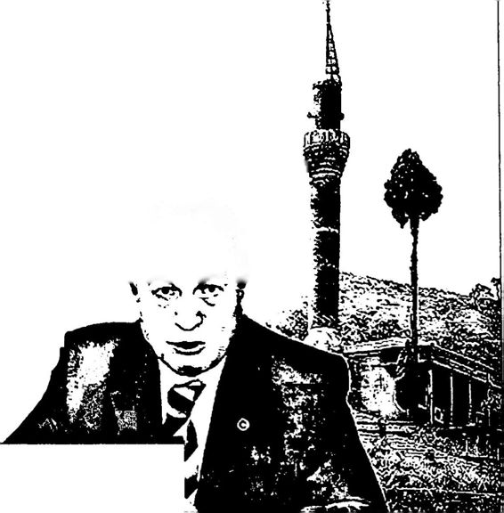 AKP’DEN SATILIKI CAMİ Gayrimüslim ibadethanelerini ihya eden iktidar İzmir'deki 500 yıllık tarihi camiyi satılığa çıkardı MHP İzmir Milletvekili Erdal Sipahi, AKP’nin camiyi satışını TBMM’ye taşıdı Üsküdar Belediye Başkanlığı’na ait dini tesis alanında kalan ve üzerin de cami bulunan 4 taşınmazın Diyanet İşleri Başkanlığına tahsis edil mek üzere vergi borcuna mahsuben Maliye Bakanlığı’na devredildiğini ifade eden Güler, satılan bu camileri şöyle sıralamıştır:
İstanbul’un AKP’li Üsküdar Belediyesi’nin 4 cami satarak başlattı ğı uygulamaya, diğer belediyeler de katılmıştır. CHP Milletvekili Umut Oran’ın soru önergesine cevap veren Maliye Bakanı Mehmet Şimşek, AKP’li Güngören, Ümraniye, Nevşehir, Reyhanlı ve Düzce belediyeleri dahil 8 belediyenin vergi borçları nedeniyle üzerinde cami olan taşın mazları Hazine’ye sattığını açıklamıştır.
AKP, 2012 Kasımı’nda Malatya’da AVM yapılması için bir cami nin de yıkılmasına izin vermiştir. Basına yansıdığı şekliyle: “Türkiye’de bazı illerde alışveriş merkezlerini çalıştıran ve aynı alışveriş merkezini Malatya’da kurmak için eski hal binasının bulunduğu alanı içindeki cami ve sosyal tesisler ile birlikte 52 milyon 500 bin TL’ye satın alan Hollanda kökenli ACT4 AŞ, alandaki inşaat çalışmaları kapsamında Hal Camii’ni yıktı. Çevredeki vatandaşlar yıkıma tepki gösterirken, yıkılan Hal Camii’nin 12 yıllık imamı olan Recep Gök, yaşanan du rumdan dolayı çok üzüldüğünü ve 20 günden beri uyuyamadiğini ifa de etmişti. Yıkıma imza atan AKP’li Malatya Belediye Başkanı Ahmet Çakır bir de üzerine, ‘Biz burada bir hayırseverimizin cami yapmasını bekliyoruz,’ dedi.”* Denizli’de de AKP’li belediye bir camiyi, eskiden kilise idi gerekçe si ile kiliseye çevirmiştir.
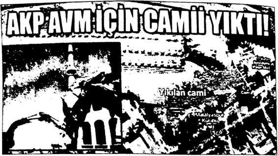 Gazeteci Muharrem Bayraktar, Yeni Mesaj gazetesinde “AKP’nin Yıktığı Camiler‘ başlıklı yazısında şu bilgileri vermiştir:
Trabzon'un Zeytinlik Mahallesi’nde bulunan tarihi Zeytinlik Camii’ni yol yapımı bahanesiyle yıktıran da dönemin AKP’li Belediye Başkanı Asım Aykan’dı (Aykan daha sonra AKP’den milletvekili se çildi). Aykan, mahalle sakinlerinin adeta yalvarırcasına, yine yol için yıkılan Cudibey İlkokulu’ndan arta kılan alana yeni bir cami yapılması isteğini de reddetmişti. O alan, şimdi otopark olarak kullanılıyor ve Zeytinlik halkı namazını bir iş hanının bodrum katında kılıyor! Ka sımpaşa’daki Piyalapaşa Kur’an Kursunu dozerlerle yerle bir ettiren de AKP hükümeti idi. Kur’an kursundaki rahlelerden dağılan Kur’anı Kerim’ler ortalığa saçılmıştı. Gezi olaylarına destek vermeyen illerden biri de Malatya. Oysa Malatya’da birkaç hafta evvel vahim bir olay meydana geldi. Hollanda kökenli ACT4 firması Malatya eski halinin bulunduğu alanı AVM yapmak üzere satın aldı. Satın aldığı alanda bir de cami vardı. Hollanda firması bu camiyi yerle bir ederek yıktırdı, internetten hâlâ yıkılan caminin görüntülerini izleyebilirsiniz. Yıkılan Hal Camii’nin 12 yıllık imamı olan Recep Gök, yaşanan durumdan dolayı çok üzüldüğünü ve 20 günden beri uyuyamadığını söylüyor du. Malatya halkı cami yıkılırken derin bir uykuda idi! Ağlayan sadece cami imamı idi. Bir taraftan Gezi eylemcilerini ‘cami düşmanı’ olarak yaftalayıp, diğer taraftan bir sürü camiyi yıktıran AKP siyasetinin gü nahı dağları aşmış durumda. CHP’nin 70 yıl evvel kapattığı camileri sürekli gündeme getirerek cami düşmanlarına karşı adresiniz AKP ol sun bilinçaltını oluşturmaya çalışan AKP siyaseti, 10 yıldan beri eline balyoz almış bahire cami yıkıyor, Kur'an Kursu yıkıyor. Ey AKP’liler! Allah aşkına elinizi bu ülkenin camisinden, Kur’an Kursundan çekin. BOP'un emperyalist politikalarının uşağı olarak ve BOP’un Eşbaş kanlık makamı olarak Irak’ta, Libya’da bombalanan camilerde ölen binlerce Müsliimanın kanı ellerinizde iken, cami edebiyatını bırakın artık...”
SJvâo Mîllî Gazete uyuk Kdıüp ve Acaf'StarıbU yellerinde kale gibi duruyor Kuran Kursu’na güçleri yetti Gazeteci Yılmaz Özdil de Hürriyet’te “Cami İcra’atı” adlı yazı sında AKP’nin cami karnesinin kırıklarla dolu olduğunu gözler önüne sermiştir.
"... 2012’de hastalıklara iyi geliyor hurafesiyle deve idrarı içenle rin, 1936’da camilerin ahır yapıldığına inanması gayet normaldir. (...) Kahramanmaraş’ta hayırsever işadamı tarafından yaptırılan ‘cami...’ Aynı hayırsever işadamının borcu yüzünden haczedildi, İcra İflas Mü dürlüğü tarafından açık arttırma usulüyle satışa çıkarıldı. 'Kur'an kursu’ binasıyla birlikte İcra’dan satılan ‘cami’nin ilanında, merkezi yerde, her türlü belediye hizmetinden yararlanabilir, altyapısı tamam, zemini inşaat yapmaya müsait yazıyor. Muharrem İnce, TBMM kür süsüne çıktı, fotoğraflarını gösterdi, TBMM tivi sansiirledi. Malatya Belediyesi, HollandalI firmaya arazi sattı. HollandalI firma, arazi üze rindeki camiyi dozerlerle yıktı. Rize’de, Adıyaman'da, Giresun’da, Zonguldak'ta, Niğde'de borç yüzünden Sami'lerin elektriği kesildi. Merkezi sistem hoparlörleri çalışmadığı için, müezzinler avluya çıkıp ezan okudu. Edirne'de 35 değil, 35 Sami'nin ısınma amaçlı elektriği kesildi. Elektrik idaresi, aydınlanma ve ısınma için iki ayrı sayaç var, aydınlanmayı ödediler, ısınmayı ödemediler, aydınlanmada sorun yok dedi...”
Başbakan Erdoğan sürekli CHP’nin 70 yıl önce, üstelik “tasnif ka nunu’' çerçevesinde sattığı ve farklı amaçlarla kullandırdığı camilerden söz edip “CHP, İnönü camileri sattı, depo ve ahır yaptı!” diye tarihle yüzleşirken, kendi başbakanlığı dönemindeki son 10 yılda Türkiye’de birçok caminin bizzat AKP’li belediyelerce satıldığı veya yıkıldığı ger çeğini görmezlikten gelmektedir. Ama daha önce de belirttiğim gibi bu bilgi çağında acı gerçekleri saklamanın imkânı yoktur.
Basına yansıdığı kadarıyla bir de yansımayanlar var haliyle AKP’nın 20022013 arasında sattığı, yıktığı camiler ile Kur’an kursla rından bazıları şunlardır:
AKP’nin 2002’den beri Türkiye’nin bütün milli varlıklarını; fab rikalarını, bankalarını, hatta dağlarını, taşlarını, topraklarını ve sula rını eşe, dosta ve yabancıya yok pahasına sattığı bilinen bir gerçektir. Cumhuriyet’in 70 yılda yaptıklarını 10 yılda haraç mezat satıp savan AKP’nin bu satış furyası içinde bazı camileri de satması aslında çok yadırganmamalıdır! Nitekim yadırgamıyoruz da! Ancak aralarında CHP’nin 27 yılda yaptıkları da dahil, Türkiye’nin neredeyse her şeyini satan AKP’nin CHP’yi “cami satmakla” suçlamasını yadırgıyoruz.
Ve “Satıp savma konusunda Türkiye’de hiçbir siyasi parti AKP’nin elinize su dökemez,” diyoruz!
AKP’nin Yaptığı Camiler, Açtığı Kur’an Kursları Bu arada AKP’ye de haksızlık etmeyelim! AKP’nin yıktığı camiler ve Kur’an kursları kadar, yaptığı, yapmakta olduğu ve yapmayı planla dığı camilerden ve Kur’an kurslarından da söz etmek gerekir.
Yıllar önce okuduğu bir şiirde, “Minareler süngümüz, kubbeler miğfer...” dediği için hapis yatan R. Tayyip Erdoğan’ın ajandasında “cami” konusu hep çok önemli olmuştur. Erdoğan ya “CHP ve İnönü camileri yıktı, ahır, parti merkezi ve depo yaptı!” diyerek ya da “AKP her yere; Çamlıca’ya, Taksim’e her tepeye cami yapacak/” diyerek oy toplamaya çalışmış ve genelde de başarılı olmuştur. Böyle olunca da ister istemez bazı AKP’li belediyelerin sattıkları camilerle yıktıkları Kur’an kurslarıyla kimse pek ilgilenmemiştir.
Her neyse!
Biz şimdi AKP’nin yaptığı ve yapmayı vaat ettiği camilerden söz edelim kısaca. Temmuz 2013’te Vakıflar Genel Müdürlüğü, İstanbul’da 130 caminin yeniden inşası için çalışma başlattığını duyurmuştur.
AKP’nin, İstanbul’un o muhteşem siluetini bozan o devasa Çamlı ca Camisi projesi hepinizin malumudur. 500 yıl önce Mimar Sinan’ın yaptığı Osmanlı camilerinin, betonarme kötü kopyası durumundaki bir camidir bu... Bu, her şeyden önce Mimar Sinan’a büyük bir saygı sızlıktır. Sinan’ın, 500 yıl kadar önce çok az teknik olanağa sahip ola rak olağanüstü bir matematik, mühendislik ve mimarlık dehasıyla inşa ettiği camileri, neredeyse birebir kopyalayıp iyice büyütüp İstanbul’un en güzel tepelerine yapıştırmak ve sonra, “En büyük camiyi ben yap tım!" demek ne dine, ne dindara ne de bu ülkeye hizmettir. Taklit as lını yaşatır. Türkiye’de öteden beri “Batı taklitçiliğini” eleştirip, Tan zimat döneminden beri devam eden Türk aydınlanmasının bu “Batı taklitçiliği” yüzünden başarısız olduğunu söyleyen muhafazakâr siya set, nedense kendisinin de çok kötü bir “Doğu taklitçisi” hatta kendi kendisinin taklitçisi olduğu gerçeğini hep göz ardı etmiştir. Batılılaş mayı “hastalık” olarak görüp kıyasıya eleştiren muhafazakâr siyase tin, (gerçi AKP’nin Batı’yla; ABD ve AB ile arası iyidir.) 5001000 yıl önceki Doğu’yu, Osmanlı’yı olduğu gibi taklit ederek “şifa” bulacağını düşünmesi ne büyük bir çelişkidir. Her türlü taklitçilik yanlıştır. Baş kasını taklit etmek gibi 5001000 yıl önceki “kendini” çok kötü bir şekilde taklit etmek de yanlıştır. En doğrusu, köklerden ve evrensel uygarlıktan ilham alarak çağa uygun özgün eserler yaratabilmektir.
AKP’nin Çamlıca dışında Taksim’e de cami yapmak istediği bi linmektedir. Bu isteği Başbakan Erdoğan birçok defa dile getirmiştir.
AKP Genel Başkanı R. Tayyip Erdoğan, hiçbir zaman DP lide ri Menderes’in yıktırdığı camilerden söz etmese de AKP, Menderes’in yıktırdığı o camilerden bazılarını çaktırmadanyeniden yapmaya ça lışmaktadır. Örneğin, DP’nin 1957’de yıktırdığı İstanbul’daki Süheyl Bey Camii’ni AKP bugün yeniden yaptırmaktadır. Ancak AKP’nin yaptırdığı Süheyl Bey Camii’nin adı dışında hiçbir şeyi o tarihi Süheyl Bey Camii’ne benzememektedir. AKP’nin yaptırdığı yeni Süheyl Bey Camii, camiden çok bir iş merkezi görünümündedir. Görülen o ki, hem ibadet hem ticaret amaçlanmaktadır.
CHP İstanbul Milletvekili İhsan Özkes, Temmuz 2013’te verdi ği bir önergeyle, yeniden inşa edilen Fındıklı sahilindeki Süheyl Bey Camii’nin neden aslından farklı yapıldığını sormuştur. Soru önergesine Başbakan Yardımcısı Bekir Bozdağ şöyle cevap vermiştir: “ Yapılan ta rihsel araştırmalar sonucu camide dükkân bölümlerinin bulunduğu be lirlenmiş olup, özgün halinde yer alan mekânlar aynen muhafaza edil miştir... Caminin özgün oturum alanının bir kısmı yolda kaldığından
yeni bir yorum ve tasarım yapma gereksinimi doğmuştur,” demiştir.“Eski camide dükkân olduğunu görür görmez, tarihi camiyi iş merke zine mi benzetmek gerekiyordu Sayın Bozdağ?” diye sormak gerekir!
Anlaşılan yeni cami yaparken “yorum ve tasarım” yapmaktan ka çınarak 500 yıl önceki camilerinin kötü taklidini yapan AKP, tarihi camileri yeniden yaparken “yorum ve tasarım” yaparak tarihi camileri tanınmaz hale sokmaktadır. Dünyada örneği olmayan bu çok farklı yaklaşımın ardında hangi sanat, estetik, dini ya da ekonomik kaygılar var acaba?
Fotoğraftaki Eâmiyj bulun.
CHP'U Ihsan Özkes, İstanbul Fındıklı’da 1957’de yıkılan ve yeniden inşası süren tarihi Süheyl Bey Camisi nin neden orijinaline benzemediğini sordu. ■ Daşbnknn'a yönelik soru önergesine cevap, yardımcısı Bekli Bozdag'dan geldi: "Ca minin özgün oturum alanının bir kışını yolda kaldığından yeııl bit yorum ve tasarım yapınn Rerekslnlml doğmuş tu).''»Umut ERDEM» 4'te 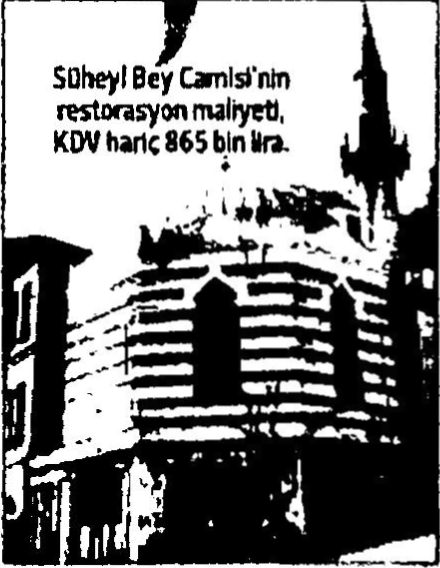 Hürriyet, 22 Temmuz 2013
Bu arada işine gelince yasal Kur’an kurslarını yıkmaktan çekin meyen AKP, aslında ideolojisi gereği tıpkı imamhatipler gibi Kur’an kurslarının sayılarını da arttırmak istemiştir. Bu amaçla “kaçak” Kur’an kurslarına bile izin vermiştir. Buralarda çocuklarımıza kimin ne öğrettiği önemli değildi! Önemli olan iyi kötü genç kuşakların din
eğitiminden geçmesidir! Başbakan Erdoğan’ın “Dindar nesil” projesi için, niteliğine bakılmaksızın imamhatiplerin ve Kur’an kurslarının sayıları artırılmalıdır.
Bu doğrultuda 2005 yılında Türk Ceza Kanunu’nda yapılan bir değişiklikle izinsiz Kur’an kurslarına verilen hapis cezası kaldırılmış tır. R. Tayyip Erdoğan, “Bu millet Müsliimandtr. Kaçak Kur’an kursu ifadesi bile çok çirkin bir ifadedir. Kur’an öğrenmek suç olamaz, ” de miştir.
Böylece tarikatlara gün doğmuştur. Türkiye büyük bir hızla “şeyh ler, dervişler, müritler, mensuplar memleketi olmaya” yüz tutmuştur.
Atatürk yanılmıştır!
AKP’nin Açtığı Kiliseler Başbakan R. Tayyip Erdoğan kendisini hep DP lideri Adnan Men deres ile özdeşleştirmekte, Menderes’ten övgüyle söz etmektedir. Men deres ile Erdoğan arasında gerçekten de çok önemli benzerlikler vardır. Örneğin Erdoğan da Menderes gibi kiliselere çok meraklıdır. Erdoğan da Menderes gibi Türkiye’de kiliselerin yeniden canlanması için elin den geleni ardına koymamaktadır.
1951 yılında İstanbul’dan Ephesos’a bir Hıristiyan haç ziyareti düzenlenmesine önayak olan da, İzmir’in Selçuk ilçesindeki Meryem Ana Evi’ni Hıristiyan haç turizmine açan da Menderes’tir. Menderes’in Papa ve Patrik ile de çok iyi ilişkiler içinde olduğu bilinmektedir. Lo zan Antlaşması’na göre Fener Rum Patrikhanesi’nin başındaki kişinin TC vatandaşı olması gerekmektedir. Bu Lozan ilkesi ilk kez ABD’den gönderilen Athenagoras’ın Türkiye’ye sokulması ile ihlal edilmiştir. Başbakan Menderes, 5 Haziran 1952’de Athenagoras’ı ziyaret edip hürmetlerini sunmuştur.
AKP’ye ve Başbakan R. Tayyip Erdoğan’a gelince: AKP’nin 10 yıllık iktidarı döneminde neredeyse her mahalleye bir kilise açılmış tır. AKP iktidarına kadar Türkiye’de yeni kilise açmak çok da kolay değildir. AKP, imar yasasındaki “cami” kelimesi yerine “ibadethane” kelimesini getirerek kilise, havra, sinagog ve bilumum ibadethanelerin açılmasını kolaylaştırmıştır. Böylece ülkenin her yanında ev kiliseler açılmaya başlanmıştır. Bugün Türkiye’de ihtiyaç olmamasına karşın on binlerce ev kilise vardır. Örneğin, Ankara Keçiören’de 46 mahalle, 53 evkiiise vardır. Tahminlere göre bugün Türkiye’de 40.000 civarın da evkilise faaliyettedir.
AKP’nin 10 yıllık iktidarı döneminde Türkiye’de Hıristiyanlık çok fazla yayılmıştır. Örneğin 20052006 yıllarında iki yıldaTrab zon Santa Maria Kilisesi’ne kayıt yaptırıp Hıristiyan olan genç sayı sı 12.500’dür. Aynı dönemde Adana Nüfus Müdürlüğü’ne müracaat edip kimliğine Hıristiyan yazdıran genç sayısı da 3000’dir.
Laik bir ülkede insanların inanma ve inanmama özgürlükleri ol duğu kadar “din değiştirme” özgürlükleri de vardır şüphesiz. Ancak kendisini “İslam’ın koruyucusu, kollayıcısı!” olarak tanımlayan, söze gelince İslam dinini kimseye bırakmayan AKP iktidarı döneminde özel likle Hıristiyanlığın yayılması düşündürücüdür.
İnanç ve ibadet özgürlüğünün ötesinde Hıristiyan dünyası için sem bolik anlamı olan Türkiye’deki tarihi kiliseler AKP döneminde ibadete açılmıştır. AKP bir taraftan Hıristiyanlara ve Musevilere toprak satışının önündeki bütün engelleri ortadan kaldırarak Türkiye’deki Hıristiyan ve Musevi nüfus oranını arttırırken, diğer yandan bu gayrimüslim nüfusu, ABD ve AB’yi memnun etmek için tarihi kiliseleri, havraları, sinagogları onarıp ibadete açmakta, hatta yeni ibadethaneler inşa etmektedir. AKP, bir emperyalist proje olan “Dinlerarası Diyalog” çerçevesinde Türkiye’yi kiliselerle, havra ve sinagoglarla donatma peşindedir. Örneğin, bu süreç te AKP tarafından Antalya Belek’te “Dinler Bahçesi” inşa edilmiştir. Bu bahçe içinde cami, kilise ve havra yan yana ve aynı kapıya açılmıştır. Burayı Başbakan Erdoğan, “ Ya Allah Bismillah!” diyerek açmıştır. Ayrı ca basına yansıdığı kadarıyla İstanbul Büyükşehir Belediyesi sıfırdan bir kilise inşaatı kararı almış ve bu iş için bütçe ayırmıştır.
2010 yılında Yeniçağ gazetesinde “Çan Sesleri Yayılıyor” başlıklı haberde şu bilgiler verilmiştir:
Türkiye’de çan sesleri her gün artarak yayılıyor.
AKP’nin kilise açılımı çerçevesinde ayine açtığı kilise sayısı 16’ya ulaştı. Trabzon’daki Sümela Manastırı ve Van Akdamar Kilisesi’nde yapılan ayinlerin ardından Türkiye’de ‘kültür varlığı’ statüsünde bulu nan kiliseler, ortalarda görünmeyen Hıristiyan cemaatin ilgisini artırdı. Kültür Bakanlığı ayin yapmak isteyenlere ‘izin gerekmeyen’ bu 16 ki liseyi adres gösteriyor.
Olmadık yerlerden ayin talebi!
Hıristiyanların bu kiliselerde rahatça ayin yapabilmesi için Dışiş leri, İçişleri, Kültür ve Turizm bakanlıkları birlikte ‘otorite kararı’ aldı. Butw göre bu kiliselerde ayin yapmak için sadece ilin valiliğine haber vermek yeterli oluyor. İlginin arttığını belirten Kültür Bakanlığı yet kilileri, 'açılım'm başarısını şu sözlerle özetliyor: ‘Bazen olmadık yer lerden ayin talebi geliyor. ' Siimela ve Akdamar kiliselerinin ardından bakanlık 16 kiliseyi daha ayinlere açtı.
Van Akdamar Kilisesinde yapılan ayinin ardından, Türkiye'deki kültür varlığı statüsündeki kiliselerde ayin yapmak isteyen Hıristiyan ların başvuruları arttı. Kültür ve Turizm Bakanlığı da 16 kilisenin ka pısını daha Htristiyanlara açtı. Alman bilgiye göre, Trabzon’da Sümela j Manastırı, ardından Van Akdamar Kilisesi'ndeki ayinlerle Hıristiyan dünyasının da dikkati Türkiye’deki diğer kiliselere çevrildi.”
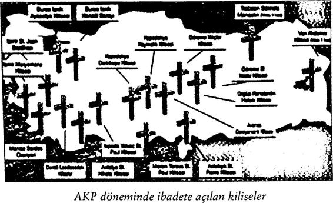 Kilisenin Şifresi: Medeniyetler İttifakı ve Diyalogculuk Başbakan Erdoğan’ın kilise, havra ve sinagog sevgisinin arka pla nında hem “Yeni Osmanlı” düşleri hem de “Dinlerarası Diyalog” ve “Medeniyetler İttifakı Projesi” vardır. Erdoğan, Müslüman, Hıristiyan ve Musevi cemaatlerin Osmanlı “Millet Sistemi”nde olduğu gibi bir arada yaşadıkları federasyonlardan oluşan çok milletli ve çok dinli bir Yeni Osmanlı hayal etmektedir. Onun bu hayali ABD’nin “Yakındoğu Federasyonu Projesi” ve “Genişletilmiş Büyük Ortadoğu Projesi” gibi projelerine birebir uyduğu için hem ABD tarafından hem de ABD’de ikamet eden Fethullah Gülen tarafından desteklenmektedir.
Erdoğan’ın savunduğu “Dinlerarası Diyalog” ise AB’nin “Mede niyetler İttifakı Projesi”ne hizmet ettiğinden AB tarafından desteklen mektedir.
Başbakan Erdoğan birçok konuşmasında Dinlerarası Diyalog’dan ve “Medeniyetler İttifakı Projesi”nden yana olduğunu dile getirmiştir.ö rneğin 19 Kasım 2002’de “İnsanlığın umudu, çeşitli din, kimlik ve ırktan insanların aynı masa etrafında oturmasına bağlıdır... ” demiştir.
25 Aralık 2007’de, “Cami, kilise ve havrayı yan yana hoşgörü içinde yaşatan yüzlerce yıllık tarihi tecrübesiyle ülkemiz, çağımızın en büyük küresel barış projesi olan Medeniyetler İttifakı’nın sembol ülke si haline gelmiştir, ” demiştir.
Başbakan Erdoğan, ayrıca Ocak 2008’de Ulusa Sesleniş konuşma sında, 13 Ekim 2008’de Birleşmiş Milletler Genel Kurulu’ndaki konuş masında ve 15 Ocak 2009’da İspanya Medeniyetler İttifakı Forumu’nda yaptığı konuşmalarda “Medeniyetler İttifakı Projesi” üzerinde durup bu projeden övgüyle söz etmiştir. Erdoğan, “Medeniyetler ittifakı, küresel bir soruna verdiğimiz yine küresel bir cevaptır, ” diyerek bu projeyi savunmuştur.
Görülen o ki Başbakan Erdoğan, ABD’nin “Medeniyetler Ça tışması Projesi” ile AB’nin “Medeniyetler İttifakı Projesi” arasmda sıkışıp kalmıştır. Siyaseten ayakta kalabilmek için her iki tarafın da desteğine ihtiyaç duyan, bu nedenle her iki tarafı memnun etmek için yoğun çaba harcayan Erdoğan, hiçbir tarafı memnun edemediğini gör düğünde artık çok geç kalmış olacaktır.
Erdoğan, bu “Dinlerarası Diyalog” ve “Medeniyetler İttifakı Pro jesine kendisini o derece kaptırmıştır ki, 2011 yılında kendini tuta mayarak Haçlı Seferleri’nin aslında “kültür seferleri” olduğunu ima edip Haçlı Seferleri güzellemesi yapmıştır. Erdoğan, 13 Nisan 2011’de Avrupa Konseyi Parlamenter Meclisi (AKPM) Genel Kurulu’nda yap tığı konuşmada şöyle demiştir:
"Haçlı Seferleri, iki kültürün, iki medeniyetin, iki dinin karşı kar şıya gelmesinden ziyade, birbirini tanıması, birbirini anlaması ve birbi rinden etkilenmesi sonucunu da doğurmuştur. Bilimde, sanatta, mima ride, dilde, musikide, günlük yaşam alışkanlıklarında, hatta yemeiçme kültürlerinin transferinde Haçlı Seferleri son derece etkili olmuştur. Bugün, Batı medeniyetinin temellerinde de Doğu medeniyetinin te mellerinde de bu karşılaşmanın etkisini hiç kimse inkâr edemez. Haçlı Seferleri tarihi, sadece savaşlar, çatışmalar tarihi değil, aynı zamanda bir kültürel etkileşim, yakınlaşma, birbirini doğrudan tanıma tarihidir. (...) Tarihi, artık savaşlar, çatışmalar, kamplaşma ve kutuplaşmalar üzerinden okuyanlayız. Tarihi savaşlar üzerinden okuyanlar, geleceği barış üzerine inşa edemezler. Haçlı Seferlerini derin hafızasından sile meyenler, kendi toplamlarına da bölgelerine de dünyaya da barış ve hoşgörü vaat edemezler. ”
Görülen o ki Erdoğan, “Dinlerarası Diyalog” ve “Medeniyetler İrtifakı Projesi” kapsamında artık dünya tarihiyle de yüzleşmeye baş lamıştır! Tarih içinde Müslümanlara yönelik gelmiş geçmiş en büyük Hıristiyan saldırısı olan Haçlı Seferlerini “kültür seferlerine” indirge yerek yumuşatma yoluna gitmiştir. Haçlı Seferlerinin “kültürel sonuç ları” olduğu doğrudur, ancak Haçlı Seferlerinin temel amacı Hıristiyan Batı’nın haçıyla Müslüman Doğu’nun hilalini parçalamaktır. Haçlı Se ferleri sonunda Anadolu’da ve Ortadoğu’da milyonlarca Müslüman, Haçlı süvarilerince kılıçtan geçirilmiştir. Haçlı Seferleriyle emperyalist Batı haçını Müslüman coğrafyasının tam kalbine saplamıştır. Müs lüman coğrafyasındaki bu Haçlı acısına yüzyılın başında. Kurtuluş Savaşı’yla Haçlı emperyalizmini dize getiren Atatürk son vermiştir. Bu yüzden dünya Müslümanları ona “İslam'ın Mücahidi”, “İslam’ın Son Kılıcı” gibi unvanlar vermiş, onu Selahaddin Eyyübi ile yan yana aynı portrede resmetmiştir. Çünkü Selahaddin Eyyubi ve Atatürk, Batı’nın Haçlı saldırılarını iki farklı zamanda iki farklı coğrafyada durduran iki büyük Müslüman önderdir.
Atatürk’ün dediği gibi “Yurtta barış dünyada barış” ve “Gerekli olmadıkça savaş bir cinayettir” demek, Atatürk’ün yaptığı gibi laik likle Müslüman, Hıristiyan, inanan, inanmayan herkese eşit uzaklıkta durmak, “devletin dini olmadığını” ilan etmek ve Türkiye Cumhuriyeti vatandaşı olan herkese hangi dinden ve hangi etnisiteden olursa olsun “eşit” yaklaşmak başka şeydir; AB ve ABD projeleri çerçevesinde Hıristiyan Haçlı güzellemesi yapmak başka şeydir. İkisini birbirine ka rıştırmamak gerekir.
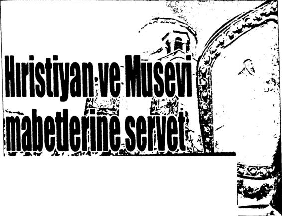 ANADOLU'dakı kilise, havra ve sinagogları ihya eden AKP, Van dakı Akdamar Kilisesi ne 3 milyon lira. Belek teki Dinler Bahçesi ne 1 4 milyon lira olmak üzere toplam 4 4 milyon lira harcadı iktidar şimdi de Edirne'deki Buyuk Sinagog için 3 milyon 700 bin lirayı gözden çıkardı Kilise ve Dinler Bahçeleri açan, buna karsın Kur'an kursu yıkan AKP Hükümeti tarihe geçtj Yıkımı gözyaşları içerisinde izleyen vatandaşlar AKP'yç öfkeli Kilise açıp, Kur’an kursu yıkan AKP’ye büyük öfke var 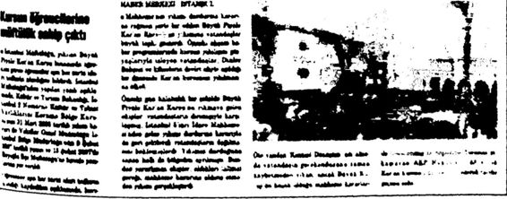
Radikal it iATt mı «tuo***s»nns% Sağcı da solcu da misyonerlik alarmı veriyor 10 bin kişi Hıristiyan oldu, Türkiye korktu I?'. yon uTu'*, ye de ‘0 öıe kıyı dm değ serdi Mısyonederm sayıyı ise 50 ‘ sıyır am le)ır. elden gidiyor' d yor. MGK mıyyoneığ tecdit yayıyor Milliyetçi 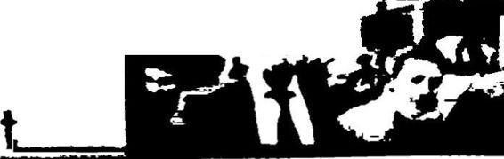 K t«dl f*A» 44 kl»t Hürriyeti!
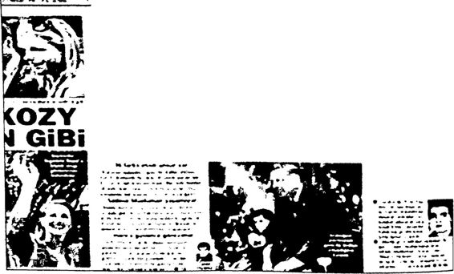 Kiliseden rahatsız olma
Atatürk ve İnönü döneminde Türkiye Cumhuriyeti, önce Lozan Antlaşması gereğince, sonra Medeni Kanun’la gayrimüslim azınlıklara gereken hakları fazlasıyla vermiş, uygulamada bazı sorunlar yaşansa da gayrimüslimlere herhangi bir baskı yapılmamıştır. Laiklikle de her türlü inancın istismar edilmediği süreceözgürce yaşanabildiği bir ortam yaratılmıştır. Lozan Antlaşması’yla Patrikhane’nin yetkileri kı sıtlanmış, Tevhidi Tedrisat Kanunu (Eğitim Öğretim Birliği) ile azınlık okulları denetlenmiş, Hıristiyan misyoner okulları kapatılmıştır. Yine Lozan Antlaşması’na göre hem tarihi kiliseler, havralar ve sinagoglar “tarihi eser” ve “müze” olarak korunmaya devam etmiş, hem de gay rimüslimlerin ibadetlerini özgürce yapmaları garanti edilmiştir.
Başta Atatürk olmak üzere genç Cumhuriyet’i kuranlar, Türkiye Cumhuriyeti vatandaşı olan, Türkiye Cumhuriyeti kanunlarına bağlı gayrimüslim vatandaşlara “eşit yurttaş” olarak davranmakla birlikte Haçlı ruhunun yeniden uyanmaması için de uyanık olmuşlardır.
AKP ile birlikte Türkiye’nin inanç yapısı değişmeye başlamış, özellikle Hıristiyan nüfusta ciddi bir artış görülmüştür. Laik bir ülke de insanların din değiştirmeleri de serbest ve normaldir, ancak bunun kendini İslami anlamda “muhafazakâr” olarak tanımlayan, îslami söy leme ağırlık veren AKP döneminde olması düşündürücüdür!
AB, son zamanlarda Türkiye’de gayrimüslim azınlıklar dışında Lozan’a aykırı olarak şimdi bir de Müslüman azınlıklardan söz etmeye başlamıştır.
Bütün dinlere “hoşgörülü” olmak bizim Müslüman Türk milleti nin en önemli özelliklerinden biridir. Milletimiz asırlarca bu hoşgörü süyle tanınmış ve sevilmiştir. Ancak bu hoşgörü, milletimizin asırlarca Haçlı tehlikesi altında kaldığı gerçeğini de unutturmamalıdır. Nitekim Atatürk ve silah arkadaşları, yüzyılın başında emperyalizmin Son Haç lı Seferi’ni Anadolu yaylasında Kurtuluş Savaşı’yla etkisiz hale getire rek bu Cumhuriyet’i kurmuştur.
Ha bu arada sürekli CHP’yi ve İnönü’yü camileri kapatmakla, sat makla, depo ve ahır yapmakla suçlayan Başbakan R. Tayyip Erdoğan, CHP’yi ve İnönü’yü, en azından arada bir de olsa, yeni kilise yapma makla, tarihi kiliseleri onarıp ibadete açmamakla da suçlayabilir!
Türkiye’de kilise, havra ve sinagog açmak, Hıristiyanlığın ve Yahudiliğin yayılmasını sağlamak konusunda Atatürk ve İnönü'nün CHP’si R. Tayyip Erdoğan’ın AKP’sinin eline su dökemez. Doğruya doğru!
Minarelere Çan Takılacaktı Falih Rıfkı Atay, 1967 yılında şöyle diyor: “Bir tek Türkün bile Atatürk'e sövebildiği Türkiye nesi ile övünebilir? Camilerimizde dolay lı veya dolaysız sövüyorlar ona! O camiler ki, Atatürk olmasaydı pek çoğunun minareleri çoktan çan kuleleri olacaktı.”
“Halk yığınları din ve caminin; 1967 Türkiyesi ‘taassup' ve 'cehalet'in pençesinde! "
Falih Rıfkı bugünleri, 2013 Türkiyesi’ni görseydi, değişen hiçbir şeyin olmadığını görmek onu şaşırtır mıydı acaba?
Bu arada Kurtuluş Savaşı sırasında İstanbul işgal edildiğinde Rumlar ve Yunanlılar, Ayasofya’ya bile çan takmayı düşünmüştü.
TEZ: 2
TÜRKÇE EZAN ZULÜMDÜR!
TÜRKÇE EZAN İÇ KARARTICIDIR!
CHP, İNÖNÜ KUR’AN’EN VE HZ. MUHAMMED’İN HAYATININ ÖĞRENİLMESİNİ, ÖĞRETİLMESİNİ YASAKLADI!
CHP EZANI SUSTURDU! EZANT MENDERES’İN DP’Sİ (TEK BAŞINA) ASLINA ÇEVİRDİ!
“1940’lt yıllar boyunca milletin değerlerine, milletin kutsallarına karşı aleni bir savaş yürütüldü. (...) Kur’anı Kerim’i öğrenmek de öğ retmek de, okumak da yasaklandı. Ezan aslına mugayir bir şekle çev rildi. (...) Merhum Adnan Menderes’in tersine çevirdiği bu süreç, 1960 müdahalesiyle rejimin hücrelerine, rejimin genlerine kadar işledi. (...) Evet... O Menderes ezanı aslına döndürdüğünde Anadolu’nun her kö şesinde insanlar hüngür hüngür ağladılar. (...) O Menderes Kur’an’ın öğretilmesinin, Hz. Peygamber’in hayatının öğretilmesinin önünü aç tığında millet sevinç gözyaşları içinde Mushaflarıyla hasret giderdi. ”
R. Tayyip Erdoğan, 30 Eylül 2012
“Bunların dünlerinde Türkçe ezan var, ahıra dönüştürülen cami ler var. ”
R. Tayyip Erdoğan, 9 Haziran 2011
“Bu İnönü CHP’si. Onlar da Türkçe ezan okudular. Menderes geldi ezan aslına döndü.”
R. Tayyip Erdoğan, 8 Haziran 2011
“Bu millet, merhum Adnan Menderes ve arkadaşlarının ezanın Türkçe okunmasına son vermelerini asla unutmadı, unutmuyor. Ben inanıyorum ki bu millet, her şey unutulsa bile, sırf ezana iade ettiği hürmetten dolayı Adnan Menderes’i gönlünde ve hafızasında taşıya caktır. Cuma günü TBMM’de tıpkı ezana hürmetin iadesi gibi Kur’aııı Kerim'in öğrenilmesine ve öğretilmesine de hürmet iade edilmiştir.”
R. Tayyip Erdoğan, 4 Nisan 2012
“Camilerin nasıl kapatıldığını, ezanın nasıl susturulduğunu (...) milletimiz çok iyi hatırlıyor. Karanlık geçmişinizle gurur duyabilirsi niz, buna bir şey demeyiz. Ama zulümle ve baskıyla dolu geçmişinizi meşrulaştırmaya kalkarsanız, belgelerle gereken cevabı veririz...”
R. Tayyip Erdoğan, 24 Nisan 2012
“Bugün 16 Haziran. Çok anlamlı bir yıldönümünü idrak ediyo ruz. Bundan 63 yıl önce bir 16 Haziran günü Merhum Adnan Mende res başbakanlığındaki Demokrat Parti hükümeti çok büyük, çok ağır bir zulmü ortadan kaldırmıştır. Türkiye’nin güzelim minarelerinden ezan iç karartıcı şekilde ‘Tanrı uludur’ diye okunuyordu. Kim yaptı bunu; CHP. İşte 16 Haziran’da yeniden minarelerden Allahu ekber diye ezan okunmaya başladı...”
R. Tayyip Erdoğan, 16 Haziran 2013
CEVAP: 2
Başbakan R. Tayyip Erdoğan konuşmalarında, “Tek Parti dö neminde Kur’anı Kerim’i öğrenmek de öğretmek de, okumak da ya saklandı”, “O Menderes Kur’an’ın öğretilmesinin, Hz. Peygamberin hayatının öğretilmesinin önünü açtığında millet sevinç gözyaşları için de Mushaflarıyla hasret giderdi”, “Cuma günü TBMM’de tıpkı ezana hürmetin iadesi gibi Kur’anı Kerim’in öğrenilmesine ve öğretilmesine de hürmet iade edilmiştir,” demiştir. Erdoğan bu sözleriyle tek par ti CHP döneminde, yani 19231950 arasında, özellikle de 1940’lar da (İnönü döneminde) Kur’an öğrenmenin, öğretmenin ve okumanın yasaklandığını, hatta Hz. Muhammed’in hayatının da öğretilmediğini iddia etmiştir.
CUMHURİYETİ KURANLARIN KUR’AN KÜLTÜRÜ Atatürk Diyor ki:
“İnönü ile Birlikte Hafıza Kur’an Okutup Dinlerdik.”
Erdoğan’ın bu iddialarına yanıt vermeden önce Cumhuriyet’i ku ranların, tek parti CHP döneminin tek adamı Atatürk ile ikinci adamı İnönü’nün Kur’an kültürüne göz atmak gerekir. Çünkü Atatürk’ün ve İnönü’nün Kur’an’la olan ilişkisini bilmeden onların döneminde Kur’an konusunda yapılanları doğru değerlendirmeye olanak yoktur.
Atatürk ve İnönü’nün Kur’an kültürünü ayrı ayrı inceleyip ortaya koymadan önce her ikisinin aynı anda Kur’an’a gösterdikleri saygıdan başlayalım.
Kurtuluş Savaşı’nın büyük zaferden birkaç ay önceki buhranlı dö nemleridir. Atatürk ve İnönü bir taraftan maddi olarak halkı ve ordu yu Büyük Taarruz’a hazırlarken, diğer taraftan da manevi bir hazırlık içindedirler. Atatürk, Büyük Taarruz öncesinde İsmet Paşa’nın komu tasındaki Batı Cephesi’ne gidip birlikleri denetlemiş, yapılan hazırlıkla rı yerinde görmüştür. İşte o günlerde (Mart 1922) tuttuğu 19 numaralı not defterinde, İsmet Paşa ile birlikte sık sık, “Hafıza Kur’an okutup dinlediklerini,” yazmıştır.
İşte Atatürk’ün 19 numaralı not defterindeki o satırlar:
“9 Mart 38 Perşembe (9 Mart 1922 Sivrihisar) İbrahim Bey’in evindeSaat 7’de kalktım. Biraz kitap okudum... Aktaş’a Birinci Fır ka, 5. Alay Hücum Taburu, bir batarya, bir süvari bölüğü teftiş, mem nun olduk.”
“Saat 8’e doğru İsmet Paşa geldi. Evvela yemek. Yemekten sonra 10 Mart için sureti hareket kararlaştırıldı. Ondan sonra hafıza Kur’an okuttuk...”
“10 Mart 38 Cuma (10 Mart 1922 Aziziye)
“Sabah saat 9’da Hüsrevpaşa’dan ileri karakol mevzilerine hare ket...”
Saat 5 Aziziye, yorgunluk hissettim.
İsmet, Yakup Şevki ve Selahattin Paşalar gelmişlerdi. Beraber ye wek yedik... Hafıza Kur’an okuttum...”
“17 Mart Cuma (17 Mart 1922 Akşehir)
Karargâha avdet, saat 8’e kadar yalnız kaldım. Mustafa Abdülhak Bey geldi. Hafıza Kur'an okuttuk.”"20 Mart Pazartesi (20 Mart 1922)
İsmet Paşa’ya gittim. Beraber bize geldik. Fahrettin Paşa ve erkanı harbi yemeğe davet etmiştim... Hafıza Kur’an okuttuk...”
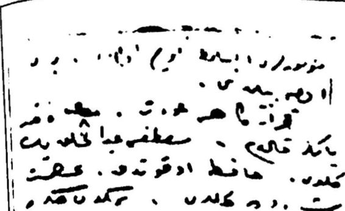 R. Tayyip Erdoğan’ın her fırsatta “Kur’anı Kerim’i yasakladıklar, öğrenilmesini, öğretilmesini, okutulmasını engellediler!“ diye suçladığı Atatürk ve İnönü, her şeyden önce bu vatanı Haçlı emperyalizminin pençesinden kurtarmıştır. Bunu yaparken Büyük Taarruz öncesinde birçok gece hafızı çağırıp bizzat Kur’an okutmuşlar, Büyük Zafer’in manevi altyapısını Kur’an’la hazırlamışlardır.
1. Atatürk’ün Kur’an Kültürü Atatürk’ün Kur’an kültürünü ayrıntılı şekilde anlatan üç ki tap vardır. Bunlardan ilki Abdurrahman Kasapoğlu’nun Atatürk'ün Kur’an Kültürü adlı değerli çalışması, İkincisi Yaşar Nuri Öztürk’ün Kur’an Penceresinden Kurtuluş Savaşı’na Bir Bakış adlı ezber bozan Çalışması, üçüncü çalışma ise benim Atatürk İle Allah Arasında adlı Hacimli çalışmamdır. Bu kitaplar dikkatle okunduğunda Atatürk’ün
nasıl derin bir Kur’an kültürüne sahip olduğu, iş ve eylemlerinde aslın da nasıl Kur’an’m ruhuna uygun hareket ettiği, Kur’an’m anlaşılması için nasıl büyük bir mücadele verdiği bütün boyutlarıyla gözler önüne serilmektedir.
Bu kitapları okuduğunuzda Cumhuriyet’i kuran Atatürk’ün bu güne kadar bu topluma anlatılmadığı kadar Kur’an’a hâkim olduğunu göreceksiniz. Atatürk Kur’an’ı anlayarak okumuştur. Bazı ayetleri ve anlamını ezberinde tutacak kadar Kur’an’ı iyi bilen bir liderdir. Çok daha önemlisi, Prof. Yaşar Nuri Öztürk’ün Kur’an Penceresinden Kurtuluş Savaşı’na Bir Bakış adlı değerli çalışmasında ifade ettiği gibi Atatürk’ün Bağımsızlık ve Aydınlanma Savaşı sırasındaki söz, eylem ve davranışlarının çoğu İslam’ın ana kaynağı Kur’anı Kerim’in ruhuna tamamen uygundur.
Atatürk, Kurtuluş Savaşı’nm ideolojisini “İslam” olarak belirle miştir. Hıristiyan Haçlı ittifakına (Yunanistan, Ermenistan, İngiltere, Fransa, İtalya ve perde arkasında ABD) karşı yürütülen Türk Kurtu luş Savaşı’mn ideolojisinin İslam olması hem bir gerekliliktir hem de İslam’ın “cihat” ilkesine tamamen uygundur. Atatürk, Bağımsızlık ve Aydınlanma Savaşı ile üç büyük zulme başkaldırmıştır. 1. Halife lik sıfatı ile padişahları tanrılaştıran saltanat sistemine, 2. Müslüman Türkleri Anadolu’dan atmak isteyen Haçlı emperyalizmine, 3. İlk emri “oku”, temel mesajı “akıl ve bilim” olan Kur’an’m istediği şekilde ce halete.
Atatürk, Müdafaai Hukuk hareketiyle her şeyden önce yüzyıllar ca İslam’ın koruyucusu olmuş Türk milletinin canını, namusunu, malı nı, vatanım ve dinini kurtarmıştır. Atatürk, Müdafaai Hukuk hareke tiyle Haçlı emperyalizmine, Haçlı emperyalizminin emrindeki yerli din istismarcılarına; namussuzluğa, hainliğe ve irticaya başkaldırmıştır.
Ünlü İslam âlimi Muhammed İkbal, Atatürk’ün Bağımsızlık ve Aydınlanma Savaşı ile İslam mirasının Hanefi fıkhı arasında şu ortak noktaları belirlemiştir:
1. Akılcılık, 2. AntiArabizm, 3. Anadilde ibadet, 4. Kadına öz gürlük, 5. Hadislere eleştirel bakış, 6. Despotizme karşı çıkış, 7. İçti hadın sürekli işlemesi gereken bir Kur’an’i ilkesi olduğunun kabul ve ilanı, 8. Halifenin/devlet başkanmın seçimle belirlenmesi.
Atatürk, Kurtuluş Savaşı yıllarında kullandığı “Tam Müslüman lık”, “Muhammedi İman”, “İslam Kardeşliği” ve “Kur’an ile hatırlat mak” kavramlarını Türk Devrimi ile hayata geçirmeye çalışmıştır.
Burada özellikle “Kur’an ile hatırlatmak” kavramı üzerinde dur mak gerekir.
Prof. Yaşar Nuri Öztürk’ten okuyalım:
“Kur’an ile hatırlatmak tabiri, Kur’an’ındır. Bu tabir bu şekliy le Türkİslam tarihinde devlet başkanı düzeyinde ilk kez Gazi Mustafa Kemal Atatürk tarafından kullanılmıştır. Hem de İzmir İktisat Kongresi gibi hayati bir platformda. (...) Bu cümle Kur’an’ın açık bir emrinin, bin küsur yıl sonra Kuran dini adına yalan ve saptırmalara teslim edilmiş ve sonunda İslam düşmanlarının işgaline uğramış bir millete, o milleti uyan dıran bir önderin dilinden tekrarıdır. Böyle bir cümleyi böyle bir zaman da söyleyenden çok söyletene bakmak gerekmez mi? Çünkü söyleyen bir ilahiyatçı, din adamı, din filozofu değildir; asker yanı galip bir siyaset, ihtilal ve fikir adamıdır. Bir kumandandır, bir devlet kurucusudur.
‘Kur’an ile hatırlatmak istiyorum,’ diyor Gazi.
Kur’an ne diyor? 50. sure olan Kaf suresinin son ayeti aynen şöyle: ‘Benim tehdidimden korkanlara sadece Kur’an ile hatırlat.’
İşte Atatürk de bunu yapıyor.
Din adına Kur’an ile hatırlatıyor, hurafe yalan ve uydurmalar la değil. Çünkü onları yıkmak istiyor, bir kısmını da yıkmıştır. Onun ayakta tutmak ve din olarak yaşatmak istediği Kur’an ile hatırlatılması mümkün olanlardır.
Müslüman toplumları asırlardır yönetenlerin, dini, hesap ve hege monyaları uğruna saptıranların neler söylediklerini yaşayarak görmüş bulunan Gazi Atatürk nihayet Kur’an’ın söylediğini aynen yapıyor. Kur’an’ın verdiği emri farkında olarak veya olmayarak Türk halkına, dünyaya ve tarihe hatırlatarak şöyle diyor:
‘Kur’an ile hatırlatmak istiyorum.’ Böyle diyor ve ardından İslam adına öne çıkarılmış birçok yalanın maskesini düşürüp Kur’an adına söylenmesi gereken gerçekleri sıralıyor. ”
İşte Atatürk’ün Kur’an kültürünün en iyi göstergelerinden biri olan İzmir İktisat Kongresi’ndeki 2 Şubat 1923 tarihli o uzun konuş masından bir bölüm:
“Eger Miislümanlardan, Kur'an't yüceltmek dini bir vazife ola rak talep olunuyorsa hiç şüphe yok ki Müsliimanlar ne kadar kuvvetli, kudretli ve bütün bu kuvvet ve kudret akılca ne kadar yüksek olur, il men, fentten gelişmiş bulunursa. Kur'an'ı yüceltmeyi iyi yapmasını bilir ve Allah ancak bu mesai tarzından daha çok memnun olabilir. Biitihı Müslümanlara da ne yapmak lazım geleceğine dair kuvvetli ve maddi bir misal gösterilmiş olur. (...)"
“Daima ileri sürülen bir şey vardır ki o da din engellemesidir... Bunda büyük bir hata vardır. Bizim dinimiz hiçbir vakit böyle bir şey talep etmez. İlim ve irfanı aramaya mecburuz. Nerede bulunursa bu lunsun oraya gitmek, onu bulmak, almak, onunla donanmak mecbu riyetindeyiz. Allah'ın emri kadın ve erkek bütün Müslümanların aynı derecede ilmen, fazileten her bakımdan olgunlaşmasıdır... Kur*an ile hatırlatmak istiyorum ki bu nerede ise oraya gidecektir. Kim? Hepsi gidecektir. Dinin bir engellemesi yoktur..."
“Bizim dinimiz İslam, en makul, en doğal dindir ve ancak bundan dolayıdır ki son dindir ve en mükemmeldir. Doğal olabilmek için akla uygun olması lazımdır. Akla, ferasete, muhakemeye, mantığa, ilme ve fenne hepsine tamamen uygun olması lazımdır ki, uygundur... Bizim dinimizde ruhbanlık yoktur.”